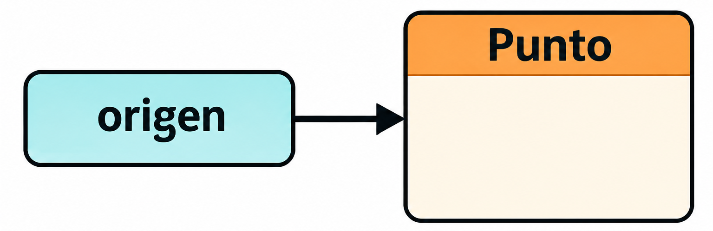
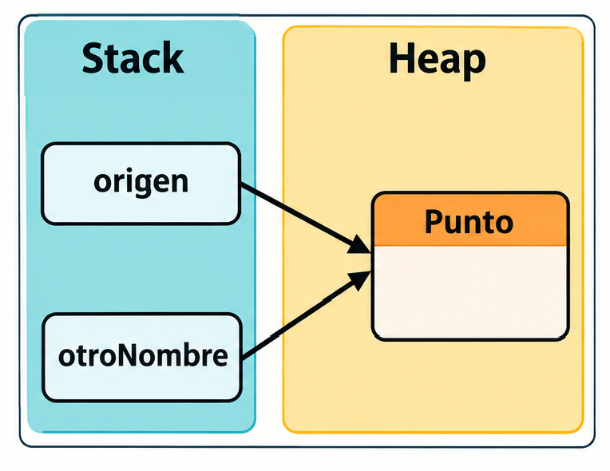

Hasta este punto de nuestro aprendizaje en el módulo de Programación, hemos construido algoritmos apoyándonos en los pilares de la programación estructurada e imperativa. A lo largo de los temas anteriores, aprendimos a declarar variables de tipos primitivos, a evaluar expresiones numéricas y relacionales, a modificar el flujo de control mediante estructuras de selección y repetición, y a interactuar de forma básica con el usuario o la biblioteca estándar del lenguaje. Sin embargo, si analizamos los programas elaborados en esa etapa, observaremos que todos ellos abordan los problemas manipulando datos desagregados y subprogramas aislados que operan de forma lineal sobre dichos datos.
Cuando la dimensión y la complejidad de los problemas del mundo real aumentan, el modelo estructurado tradicional empieza a mostrar una nueva dificultad: cómo organizar el programa para que su estructura siga siendo comprensible y fácil de mantener. Gestionar muchas variables sueltas de tipo cadena, entero o real para el nombre, la edad o la nota de múltiples alumnos, por ejemplo, realizando muchas operaciones diferentes sobre cada una, manteniendo las variables y las instrucciones de forma independiente, da lugar a un código complejo y propenso a errores. Además, debemos garantizar que las operaciones se realizan con el alumno correcto y que sus datos conservan en todo momento la coherencia necesaria. La razón fundamental de esta limitación radica en que la programación clásica no relaciona la información con las operaciones que se realizan sobre ella.
Para superar esta barrera metodológica surge el paradigma de programación orientada a objetos (habitualmente, POO). Como ya vimos al estudiar los conceptos básicos del lenguaje Java, un objeto puede representar una entidad mediante un conjunto de datos y las operaciones asociadas a los mismos. La POO propone un cambio de paradigma: en lugar de traducir el dominio de un problema a una secuencia de instrucciones sobre tipos primitivos, el software se organiza modelando entidades del mundo real mediante objetos. Ahora profundizaremos en esta idea para comprender cómo se construyen los objetos, cómo se relacionan entre sí y cómo podemos utilizarlos para organizar programas de mayor complejidad. También veremos qué dificultades presenta la programación estructurada cuando los problemas crecen y qué mecanismos proporciona la orientación a objetos para abordar esas dificultades.
Java es un lenguaje orientado a objetos y, aunque ya hemos utilizado clases y objetos proporcionados por su biblioteca estándar, hasta ahora nos hemos centrado principalmente en las instrucciones que permiten resolver algoritmos. A lo largo de este tema 4, aprenderemos a definir nuestras propias clases, crear objetos a partir de ellas y establecer qué información almacenan y qué operaciones ofrecen. Para ello, estudiaremos los conceptos de estado, comportamiento e identidad, así como la abstracción y la encapsulación, que permiten construir representaciones de los elementos del problema y controlar la forma en que se accede a ellos. También conoceremos cómo se crean e inicializan los objetos, cómo se gestionan sus referencias y qué papel desempeñan los constructores y los métodos.
El objetivo no es abandonar las técnicas de programación que hemos aprendido, sino incorporarlas a una forma de organización más adecuada para determinados problemas. Las secuencias, las selecciones y las repeticiones seguirán siendo necesarias para expresar los algoritmos; la orientación a objetos nos permitirá, además, organizar los datos y las operaciones que forman parte de esos algoritmos. Con ello comenzaremos a construir programas en los que cada clase tenga unas responsabilidades definidas y cuyos objetos puedan colaborar para resolver un problema común.
Hasta ahora hemos aprendido a resolver problemas mediante algoritmos y a traducirlos a instrucciones que el ordenador puede ejecutar. Hemos utilizado variables para representar datos, expresiones para operar con ellos y estructuras de control para determinar qué instrucciones deben ejecutarse y en qué orden. Sin embargo, existe otra cuestión que debemos abordar cuando desarrollamos aplicaciones de mayor complejidad: cómo organizar los distintos elementos que componen un programa para representar adecuadamente el problema que estamos resolviendo.
Un paradigma de programación representa un marco de pensamiento, una perspectiva que determina cómo el desarrollador modela la realidad, estructura el programa y organiza el código. No se trata únicamente de una colección de instrucciones o de una sintaxis particular, sino de un conjunto de ideas y principios que orientan la forma en que representamos los problemas y construimos sus soluciones. A lo largo de la historia de la informática han surgido diferentes paradigmas, cada uno de ellos con sus propias formas de abordar la programación. Estos paradigmas no han surgido por capricho, sino como respuesta al tipo de problemas a resolver y a la complejidad implícita en los mismos.
En el paradigma de la programación imperativa, un programa se concibe como una jerarquía descendente de algoritmos y subprogramas que operan sobre estructuras de datos mantenidas de forma independiente. En la programación estructurada tradicional, los procedimientos dependen de forma crítica de la representación interna de los datos; por consiguiente, cualquier modificación en la estructura de una variable se propaga en cadena a lo largo de decenas de subprogramas, comprometiendo la estabilidad del código y dificultando la reutilización.
El paradigma de la Programación Orientada a Objetos (POO) propone una transformación conceptual. Su propuesta consiste en organizar los programas en torno a objetos que representan entidades relevantes para el problema, reuniendo la información que las describe y las operaciones que pueden realizarse sobre ella. En lugar de pensar exclusivamente en una sucesión de instrucciones que manipulan datos, podemos concebir el sistema como un conjunto de entidades que mantienen su propia información, los objetos, y colaboran para alcanzar un objetivo común.
Para comprender por qué surgió esta forma de programación y cuáles son las ideas que la sustentan, comenzaremos por su evolución histórica. A continuación, estudiaremos las dificultades que aparecen cuando los programas crecen y los fundamentos conceptuales que permiten comprender cómo se organizan los objetos.
Los primeros lenguajes de programación se diseñaron para expresar cálculos y procedimientos que el ordenador debía ejecutar. El programador describía los datos necesarios y las instrucciones que debían manipularlos, organizando la solución mediante secuencias de operaciones y, posteriormente, mediante procedimientos y funciones. Este enfoque permite resolver muchos problemas de forma eficaz, pero no siempre resulta natural cuando debemos representar sistemas formados por numerosas entidades que mantienen información propia e interactúan unas con otras.
La consolidación de la Programación Orientada a Objetos no fue una invención repentina, sino el fruto de más de tres décadas de investigación en el diseño de lenguajes de programación, la arquitectura de sistemas y las interfaces hombre-máquina.
Desarrollado en el Centro Noruego de Computación en Oslo por Ole-Johan Dahl y Kristen Nygaard como una extensión del lenguaje ALGOL 60, fue diseñado para resolver problemas de simulación de eventos discretos (modelado de sistemas físicos como el tráfico marítimo en un puerto, colas de espera o redes de transporte), es decir, sistemas cuyo comportamiento evoluciona a través de una sucesión de acontecimientos.
La primera versión, Simula I, apareció a mediados de los años sesenta. Posteriormente, en 1967, se presentó Simula 67, una evolución del lenguaje que incorporó conceptos fundamentales para la programación orientada a objetos. Entre sus aportaciones destacaron las clases, los objetos, las relaciones de herencia y los procedimientos virtuales. Estos mecanismos permitían representar entidades con características comunes y comportamientos específicos, así como organizar las relaciones entre ellas.
La importancia de Simula no reside tanto en haber proporcionado nuevas instrucciones al programador, sino en mostrar que muchos problemas pueden expresarse de forma más natural si el programa representa las entidades que intervienen en el sistema. Cada entidad puede mantener un estado propio y disponer de operaciones asociadas. Por esta razón, Simula 67 se considera habitualmente el primer lenguaje de programación orientado a objetos. Aunque su propósito inicial estaba relacionado con la simulación, las ideas que introdujo demostraron tener una utilidad mucho más amplia y terminaron influyendo en numerosos lenguajes posteriores.[1]J. Sklenar, Introduction to Simula, Universidad de Malta. Disponible en: https://staff.um.edu.mt/jskl1/talk.html. Véase también el capítulo sobre Simula 67 en General Concepts of the Simula 67 Programming Language, de J. D. Ichbiah y S. P. Morse.
Durante la década de 1970, los investigadores del Palo Alto Research Center (Xerox PARC) crearon Smalltalk, considerado el primer lenguaje y entorno «puro» orientado a objetos. Entre ellos destacó Alan Kay, quien acuñó el término Object-Oriented Programming, junto con otros investigadores como Dan Ingalls y Adele Goldberg, que participaron en la evolución de Smalltalk.
Smalltalk contribuyó a consolidar una visión de la programación en la que el sistema se organiza mediante objetos que interactúan enviándose mensajes. Un objeto no se limita a almacenar información: también ofrece un conjunto de operaciones a través de las cuales otros objetos pueden solicitarle que realice determinadas tareas.
Esta perspectiva introduce una idea especialmente importante: la solución de un problema puede construirse mediante la colaboración entre entidades con responsabilidades diferenciadas. Cada objeto participa en el funcionamiento general del programa sin que sea necesario que los demás conozcan todos los detalles de su funcionamiento interno.
Smalltalk fue el precursor de las interfaces gráficas de usuario (GUI). Su evolución durante los años setenta y ochenta contribuyó a extender las ideas de la POO y a mostrar que podían aplicarse a la construcción de sistemas informáticos de propósito general.[2]Alan C. Kay, The Early History of Smalltalk, ACM SIGPLAN Notices, vol. 28, n.º 3, 1993. DOI: https://doi.org/10.1145/155360.155364. Véase también Kids and Us: The Story of Smalltalk, IEEE Spectrum: https://spectrum.ieee.org/xerox-parc/smalltalk-history.
A principios de la década de los ochenta, Bjarne Stroustrup desarrolló C++ («C con clases») en los Laboratorios Bell, añadiendo mecanismos de abstracción de datos y jerarquías de objetos sobre la base del lenguaje C. Su desarrollo impulsó la adopción industrial del paradigma, permitiendo escribir aplicaciones de alto rendimiento mientras se disfrutaba de los beneficios de la programación orientada a objetos.
Durante las décadas siguientes, se incorporaron a numerosos lenguajes los principios de la programación orientada a objetos . C++, como acabamos de ver, amplió un lenguaje ya existente para incorporar mecanismos orientados a objetos, línea seguida por muchos otros; otros sin embargo, como Eiffel y Java, desarrollaron sus propias propuestas para organizar el software mediante clases y objetos.
La expansión de este paradigma estuvo relacionada con la necesidad de construir aplicaciones cada vez más grandes, en las que resultaba importante reutilizar componentes, distribuir responsabilidades y controlar las dependencias entre las distintas partes del sistema. La orientación a objetos proporcionaba mecanismos que ayudaban a describir estas relaciones y a organizar el código de manera que pudiera evolucionar con el tiempo.
Java, presentado en 1995 por James Gosling y Sun Microsystems, adoptó las clases y los objetos como elementos fundamentales para organizar los programas, eliminando elementos complejos y propensos a errores (como el uso de punteros, la gestión manual de memoria o la herencia múltiple). Hasta ahora hemos utilizado objetos y clases proporcionados por su biblioteca estándar, pero nos hemos centrado principalmente en las instrucciones necesarias para resolver algoritmos. A partir de este tema aprenderemos a definir nuestras propias clases, crear objetos a partir de ellas y determinar qué información y operaciones corresponden a cada uno.
Conviene señalar que la evolución histórica de la POO no consiste en la sustitución absoluta de un paradigma por otro. Los distintos enfoques de programación pueden complementarse, y los lenguajes actuales combinan características procedentes de diferentes tradiciones. La orientación a objetos no elimina la necesidad de utilizar secuencias, selecciones, repeticiones o métodos: aporta una forma adicional de organizar los datos y las operaciones que intervienen en la solución de un problema.
Más allá de su evolución histórica, La POO parte de una premisa fundamental: el programa refleja las entidades que participan en el problema y sus reponsabilidades, como en el mundo real.
No procesamos la realidad como un conjunto de variables numéricas inconexas ni como un flujo ininterrumpido de instrucciones. Los seres humanos percibimos la realidad identificando objetos —un coche, una cuenta bancaria, un estudiante, una factura—, que poseen unas características determinadas y son capaces de realizar o responder a una serie de acciones concretas.
Por ejemplo, en una aplicación de gestión bancaria podemos representar una cuenta mediante la información que permite identificarla y conocer su saldo. También podemos asociar a esa cuenta las operaciones necesarias para ingresar dinero, retirar una cantidad o consultar el saldo disponible. Cada cuenta concreta tendrá su propio estado, aunque todas las cuentas puedan compartir una estructura y unas operaciones comunes.
La POO se apoya así en varias ideas que desarrollaremos a lo largo del tema. La primera es que un objeto representa una entidad que posee características y puede realizar determinadas acciones. La segunda es que los objetos interactúan con otros objetos para colaborar en la resolución de un problema. La tercera es que debemos definir con claridad qué responsabilidades corresponden a cada entidad y cómo puede utilizarse desde el resto del programa.
Un objeto no tiene por qué representar necesariamente una entidad física del mundo real, como un vehículo o una cuenta bancaria. También puede representar conceptos abstractos, como una operación matemática, una configuración o una sesión de trabajo. Lo importante es que la representación resulte útil para el problema que deseamos resolver.
Tampoco debemos pensar que orientar un programa a objetos consiste simplemente en crear muchas clases. La elección de las entidades que necesitamos representar, qué información concreta necesitamos conservar de cada una, la distribución de las responsabilidades y las relaciones que establecemos entre ellas son decisiones de diseño que influyen directamente en la claridad y la mantenibilidad del software.
A continuación, analizaremos qué aportan los objetos para abordar problemas que pueden surgir si solo usamos programación estructurada. Después estudiaremos las características que permiten describirlos y los principios que regulan la forma en que representamos y protegemos su información.
La programación estructurada, consolidada en los setentas y ochentas gracias a investigadores como Dijkstra, Wirth y Hoare, supuso un avance respecto a la programación no estructurada, proporcionándonos herramientas para organizar el flujo de control de un programa mediante secuencias, selecciones y repeticiones. Además, la utilización de procedimientos y funciones permite dividir un problema complejo en tareas más pequeñas (diseño descendente o top-down), de manera que cada una de ellas pueda diseñarse, implementarse y comprobarse de forma independiente. La programación estructurada permitió elevar sustancialmente la calidad y legibilidad del código.
Sin embargo, aunque en un programa sencillo la separación entre los datos y los procedimientos que los manipulan no suele plantear grandes problemas, a medida que los sistemas crecen en dimensiones y complejidad, aparece una dificultad que no siempre resulta sencillo resolver únicamente mediante la descomposición del algoritmo en subprogramas: cómo organizar la información y las operaciones que actúan sobre ella. La causa fundamental no estriba en una deficiencia sintáctica, sino en una desconexión metodológica de fondo: la programación estructurada mantiene separados los datos de los algoritmos que los manipulan.
En el modelo estructurado, las estructuras de datos se definen de forma pasiva, mientras que las funciones y procedimientos actúan de manera activa desde el exterior: la información que describe una entidad y las operaciones que la manipulan se organizan como elementos independientes. Los distintos procedimientos necesitan acceder a los datos que les corresponden y, en muchos casos, deben conocer cómo están representados para poder utilizarlos correctamente. Esta dependencia puede extenderse a distintas partes del programa, de modo que una modificación en la representación de los datos obliga a revisar todos los procedimientos afectados.
Imaginemos que deseamos desarrollar una aplicación bancaria que deba gestionar numerosas cuentas. Cada una de ellas posee información propia, como su número identificativo y su saldo, y está sujeta a determinadas operaciones y condiciones. Si, posteriormente, decidimos incorporar a cada cuenta una nueva característica que deba tenerse en cuenta al retirar dinero, tendremos que identificar los procedimientos que intervienen en esa operación y comprobar que todos aplican las nuevas condiciones. Si la lógica relacionada con una misma entidad se encuentra dispersa entre numerosos subprogramas, resulta más difícil localizar todas las dependencias y verificar que los cambios no introducen inconsistencias.
Esta dificultad está relacionada con el acoplamiento: grado de dependencia que existe entre las diferentes partes de un programa. Cuanto mayor sea la dependencia entre sus componentes, más probable será que una modificación aparentemente localizada obligue a revisar otras partes del sistema. El problema no consiste simplemente en que el programa tenga muchos procedimientos, sino en que sus responsabilidades y sus dependencias están distribuidas de manera que resulta difícil comprender cómo se relacionan entre sí.
También debemos considerar la posibilidad de que diferentes procedimientos modifiquen los mismos datos. Si cada uno de ellos puede alterar el estado de una cuenta, tendremos que asegurarnos de que todos respeten las condiciones necesarias para mantenerla en un estado válido. Una operación que inicialmente estaba diseñada para retirar dinero podría dejar de cumplir sus requisitos si otro procedimiento modifica el saldo sin aplicar las mismas comprobaciones. La solución exige establecer y mantener reglas que no siempre quedan ligadas a un único componente del programa.
De manera similar, podemos reutilizar un procedimiento siempre que su funcionamiento se adapte a los datos que recibe y a las condiciones en las que debe trabajar. Sin embargo, cuando los datos y las operaciones relacionadas con una entidad se encuentran dispersos, reutilizar todos los elementos necesarios puede exigir conocer numerosos detalles de su organización interna. Además, una modificación destinada a una parte de la aplicación puede afectar a otra que utiliza los mismos procedimientos con un propósito diferente.
Recapitulando, los principales problemas de la programación estructurada son:
Estas dificultades no son inevitables en la programación estructurada. Una descomposición adecuada, unas interfaces bien definidas y el control de acceso a los datos permiten reducir las dependencias y desarrollar aplicaciones de considerable complejidad. El problema es que la organización del algoritmo en subprogramas no garantiza, por sí sola, que la información de cada entidad y las operaciones que le corresponden queden agrupadas y protegidas de manera coherente.
La aportación fundamental de la POO consiste en proporcionar un nivel de organización superior. En lugar de mantener necesariamente separados los datos y los procedimientos que los manipulan, permite reunir la información y las operaciones relacionadas con una misma entidad en una unidad de organización: el objeto. De esta forma, cada objeto puede representar una entidad concreta del problema y asumir las responsabilidades que le corresponden, mientras que el resto del programa interactúa con él mediante las operaciones que ofrece; y si la representación interna de un dato cambia, solo los procedimientos del propio objeto necesitan ajustarse.
Esta organización no elimina la necesidad de utilizar variables, expresiones, selecciones, repeticiones o funciones, ni garantiza que un programa esté bien diseñado. Aporta un criterio adicional para distribuir las responsabilidades y controlar las dependencias: organizar parte de la solución en torno a las entidades que intervienen en el problema, en lugar de atender únicamente a las operaciones que deben ejecutarse.
A continuación, estudiaremos qué caracteriza a un objeto. En particular, analizaremos qué información mantiene, qué operaciones puede realizar y cómo podemos distinguir una entidad concreta de las demás. Estos conceptos nos permitirán comprender las nociones de estado, comportamiento e identidad, que constituyen el siguiente paso en el estudio del paradigma orientado a objetos.
Cuando aplicamos el paradigma orientado a objetos, no basta con identificar las entidades que intervienen en el problema. También debemos determinar qué información las describe, qué operaciones pueden realizar y cómo podemos distinguir unas de otras. Un objeto es una entidad del mundo real; un ente discreto y autónomo del dominio del problema que se caracteriza por tres características fundamentales: estado, comportamiento e identidad.
Estos tres conceptos, formulados originalmente por Grady Booch en sus trabajos pioneros sobre análisis y diseño orientado a objetos, constituyen la piedra angular sobre la que se fundamenta la abstracción de objetos. Aunque están estrechamente relacionadas, cada una representa un aspecto diferente de la entidad que deseamos modelar.
El estado (state) de un objeto representa su condición en un momento concreto de la ejecución del programa. Está constituido por el conjunto de valores que describen sus características, sus atributos, en un momento determinado. Estos valores representan la información que necesitamos conservar sobre la entidad y permiten conocer su situación actual.
Una cuenta bancaria, por ejemplo, posee información que permite identificarla, a su titular y determinar el saldo. Dicho saldo es especialmente significativo porque puede cambiar durante la ejecución de la aplicación: un ingreso incrementa su valor, mientras que una retirada lo reduce. Por tanto, el estado de la cuenta antes de realizar una operación puede ser diferente del que presenta después de ejecutarla.
Esto significa que el estado no es necesariamente inmutable. Las características que describen un objeto pueden permanecer constantes o modificarse por operaciones que se realizan sobre el mismo. Es decir, el estado representa los valores que caracterizan al objeto en cada momento, no solamente los que tenía cuando comenzó a utilizarse.
Además, el estado debe interpretarse en relación con la entidad concreta que representa. Si tenemos varias cuentas, cada una mantendrá su propio saldo. Aunque dos cuentas presenten inicialmente la misma cantidad de dinero, sus estados pueden evolucionar de manera diferente si sobre ellas se realizan operaciones distintas.
Un aspecto crucial en el diseño de objetos es la noción de estado válido. No se debe permitir jamás que el estado de un objeto adopte valores incoherentes o imposibles dentro del dominio del problema (como un saldo alfanumérico). Como veremos, la encapsulación va a jugar aquí un papel fundamental.
El comportamiento (behavior) de un objeto determina cómo actúa y reacciona ante las peticiones externas. Comprende las operaciones que puede realizar o las respuestas que puede ofrecer cuando otros componentes del programa interactúan con él. Mientras que el estado describe cómo se encuentra una entidad, el comportamiento determina qué podemos hacer con ella.
Una cuenta bancaria puede permitir ingresar dinero, retirarlo o consultar el saldo disponible. Estas operaciones representan comportamientos relacionados con la cuenta, puesto que expresan las tareas que podemos realizar utilizando la información que mantiene. Las operaciones no tienen que modificar necesariamente el estado del objeto: un ingreso o retirada produce cambios en el saldo pero una consulta puede limitarse a proporcionar información sin alterar los valores almacenados. Por tanto, el comportamiento comprende tanto las operaciones que modifican el estado como aquellas que permiten conocerlo o utilizarlo.
También debemos considerar que las operaciones deben respetar unas condiciones. Por ejemplo, si no se permite retirar una cantidad superior al saldo, el comportamiento asociado a la retirada tendrá que comprobar esa condición antes de modificar el estado. De esta manera, las operaciones no se limitan a ejecutar cálculos: también expresan reglas que determinan cómo puede utilizarse la entidad.
En la programación orientada a objetos, el estado y el comportamiento están relacionados. Las operaciones de un objeto pueden consultar o modificar su estado, y el estado actual puede condicionar el resultado de esas operaciones. Esta relación permite reunir la información y las responsabilidades que corresponden a una misma entidad, en lugar de tratarlas necesariamente como elementos independientes.
En la filosofía de la orientación a objetos, realizar una acción asociada al comportamiento se concibe bajo el modelo de paso de mensajes. Un objeto emisor (cliente) envía un mensaje a un objeto receptor (servidor) solicitando la ejecución de una tarea. El objeto receptor procesa la petición de acuerdo con sus reglas, modifica su estado si procede y, opcionalmente, devuelve un resultado al emisor.
La identidad (identity) es la propiedad de un objeto que lo distingue de manera inequívoca de todos los demás objetos del programa. Permite distinguir un objeto concreto de los demás; representa el hecho de que cada objeto corresponde a una entidad individual, incluso cuando la totalidad de sus atributos contengan valores idénticos.
Por ejemplo, dos cuentas pueden tener el mismo saldo y permitir realizar las mismas operaciones. Esta coincidencia no significa que ambas cuentas sean la misma: cada una conserva su propia identidad y las operaciones realizadas sobre una deben afectar únicamente a esa cuenta.
Es fundamental distinguir con total claridad entre identidad e igualdad de estado (o equivalencia). El estado está formado por los valores que describen al objeto y puede cambiar a lo largo del tiempo; la identidad, en cambio, permite reconocer a un objeto concreto aunque sus valores se modifiquen. De este modo, una cuenta sigue siendo la misma cuenta cuando su saldo pasa de cien a doscientos euros, aunque su estado haya cambiado.
Tampoco debemos confundir la identidad con una característica particular utilizada para identificar una entidad dentro de una aplicación. El número de cuenta, por ejemplo, es un dato que permite reconocerla en el sistema bancario, pero la idea de identidad es más general: se refiere a la individualidad del objeto, no exclusivamente al valor de uno de sus datos.
Esta distinción adquiere especial relevancia cuando los programas gestionan muchas entidades semejantes. Podemos tener miles de cuentas semejantes pero necesitamos tratarlas como objetos individuales para dirigir cada operación a la entidad que corresponda.
Si queremos retirar dinero de una cuenta, debemos primero determinar de qué cuenta, pues su identidad la distingue del resto. La operación tendrá en cuenta su estado actual, especialmente el saldo, para comprobar si podemos hacerlo. Si la operación se completa, cambiará su estado, pero la identidad de la cuenta no.
Esta forma de representar las entidades permite razonar sobre cómo funciona un programa a partir de objetos que mantienen información propia y ofrecen operaciones relacionadas con ellos mismos. En lugar de considerar una colección de variables y procedimientos, podemos identificar qué representa a cada entidad, qué responsabilidades tiene cada una y cómo deben colaborar para resolverlo.
| Propiedad | Pregunta a la que responde | Rol en el sistema |
|---|---|---|
| Estado | ¿Qué sabe o contiene el objeto? | Información interna en un momento dado. |
| Comportamiento | ¿Qué puede hacer el objeto? | Algoritmos y servicios que transforman (o no) el estado. |
| Identidad | ¿Quién es el objeto? | Distingue instancias concretas e independientes. |
Conviene recordar que estas características constituyen un modelo conceptual, no una garantía de que el diseño sea correcto. Para construir el programa debemos decidir qué información resulta relevante, qué operaciones necesita cada objeto y cómo se relaciona con el resto del sistema. Una elección inadecuada puede generar objetos con responsabilidades poco claras o dependencias innecesarias.
A continuación, estudiaremos dos principios que ayudan a tomar estas decisiones: la abstracción y la encapsulación.
Estos dos conceptos representan los dos primeros pilares fundamentales de la programación orientada a objetos. No basta con identificar el estado, el comportamiento y la identidad: hay que decidir qué características necesitamos conservar, qué comportamientos nos interesan y cómo organizamos estos elementos para usarlos coherentemente.
Aunque abstracción y encapsulación están estrechamente relacionados y suelen mencionarse de forma conjunta en la literatura, responden a preguntas diferentes. La abstracción nos ayuda a determinar qué aspectos de una entidad son relevantes para el problema que deseamos resolver. La encapsulación permite reunir la información y sus operaciones relacionadas, separando su funcionamiento interno de la forma en que la usa el resto del programa.
La aplicación de estas dos herramientas permite gestionar la complejidad de los grandes sistemas informáticos, liberando al desarrollador de la necesidad de conocer minuciosamente los detalles de cada módulo para poder utilizarlo con total garantía.
La mente humana es incapaz de procesar simultáneamente la totalidad de la complejidad del mundo real. Para interactuar con nuestro entorno, las personas abstraemos de forma inconsciente la realidad, creando modelos simplificados que contienen únicamente la información necesaria para cumplir un propósito concreto.
La abstracción es el proceso mediante el cual identificamos las características y los comportamientos relevantes de una entidad, dejando aquellos detalles que no resultan necesarios para el problema que estamos resolviendo. No consiste en describir exhaustivamente la realidad, sino en construir una representación simplificada que permita trabajar con ella de manera eficaz.
Para comprenderlo, podemos pensar en la representación de la Tierra. Estamos ya acostumbrados a ver imágenes tomadas desde el espacio en las que vemos una esfera, debido a que las diferencia de distribución de masa y gravedad son mínimas, aunque sabemos que no es exactamente así, sabemos que es un esferoide achatado por los polos. Sin embargo, cuando la representamos, solemos usar lo que denominamos un globo terráqueo, una esfera perfecta que pude representar líneas para las fronteras, ríos, un relieve exagerado (si lo tiene), pero que nos ayuda a comprender cómo es, dónde estás los accidente geográficos o los países. Y si estudiamos cómo varía la fuerza de la gravedad en diferentes puntos del planeta, usaremos la patata de Postdam, una imagen irregular y abultada que exagera la escala vertical unas 10000 veces.
Este ejemplo muestra que la abstracción depende del problema que deseamos resolver. Una misma entidad del mundo real puede representarse de diferentes maneras, cada una adecuada a un contexto concreto. No existe necesariamente una única representación válida de un vehículo o una persona: debemos elegir la información y las operaciones que realmente necesita la aplicación.
En el caso de la cuenta bancaria que hemos utilizado anteriormente, podríamos representarla mediante su número identificativo, el titular y el saldo disponible. Las operaciones relevantes serían ingresar dinero, retirar una cantidad y consultar el saldo. Para gestionar las operaciones habituales de una cuenta no necesitaríamos representar todos los detalles de la infraestructura informática del banco ni los mecanismos internos que permiten almacenar sus datos.
La abstracción también permite trabajar con una entidad sin conocer todos los detalles de su funcionamiento. Cuando utilizamos la cuenta, nos interesa saber qué operaciones podemos realizar y cuáles son sus resultados; no necesitamos conocer ni la organización ni todos los pasos internos que se ejecutan para completar una operación.
Por tanto, podemos afirmar que abstraer consiste en identificar qué necesitamos conocer de una entidad y qué necesitamos hacer con ella, atendiendo a los objetivos de la aplicación. Esto permite reducir la complejidad del problema, concentrar la atención en los aspectos importantes y evitar que la representación incluya información innecesaria.
Una vez que hemos determinado la información y operaciones que debe contemplar nuestra representación, debemos decidir cómo organizarlas: la encapsulación es el mecanismo técnico de implementación que materializa dicha abstracción en el código. Consiste en agrupar los datos y las operaciones relacionados con una misma entidad y delimitar la forma en que el resto del programa puede acceder a su información e interactuar con la misma. Etimológicamente, significa «cerrar dentro de una cápsula»; esa cápsula es la clase.
Recordemos uno de los problemas que analizamos al estudiar los límites de la programación estructurada: cuando los datos y los procedimientos que los manipulan se encuentran dispersos por el programa, diferentes componentes pueden depender de la representación interna de esos datos. La encapsulación permite abordarlo reuniendo en un mismo objeto la información que describe a la entidad y las operaciones correspondientes. De este modo, los datos y las operaciones dejan de ser elementos independientes y pasan a formar parte de una unidad con una responsabilidad determinada.
Sin embargo, encapsular no significa únicamente agrupar datos y operaciones; implica también establecer límites al acceso a la información y determinar cómo puede utilizarse desde otras partes del programa. Garantizamos que un objeto sea robusto evitando que cualquier otro componente pueda modificar su estado sin respetar las condiciones que regulan su funcionamiento. A esto lo denominamos ocultación de información (Information Hiding).
Supongamos que el saldo de la cuenta bancaria pudiera modificarse directamente desde cualquier parte de la aplicación, distintos procedimientos podrían incrementar o reducir su valor sin comprobar las condiciones necesarias. Un código aplicaría correctamente la restricción mientras otro podría permitir una retirada superior al saldo disponible, por ejemplo. Para que el sistema fuera coherente, todos los procedimientos deberían estar implementados de forma correcta y mantenerse actualizados. Con la encapsulación, podemos gestionar que las operaciones destinadas a modificar el saldo comprueben las condiciones correspondientes y el resto del programa deba solicitar que realizar una operación, en lugar de modificar directamente la información interna sin atender a las reglas.
Otra ventaja de la encapsulación, más concretamente de la ocultación, reside en la actualización de la información interna. Supongamos que queremos representar un punto del plano euclideo e, inicialmente, lo hacemos mediante sus coordenadas cartesianas pero, posteriormente, decidimos modificarlo a las coordenadas polares. Si el resto del programa depende directamente de esa representación, tendremos que revisar todo el código que la utiliza. Pero, si interactúa mediante operaciones claramente definidas, podremos realizar el cambio interno sin necesidad de modificarlo todo, siempre que se mantenga su funcionamiento observable.
La encapsulación contribuye así a reducir el acoplamiento y a mantener la coherencia con la entidad. No elimina por completo las dependencias ni garantiza que el diseño sea correcto, pero proporciona mecanismos para controlarlas y facilita que cada objeto asuma las responsabilidades que le corresponden.
Aunque ambas tienen finalidades distintas, se complementan en el diseño orientado a objetos: la abstracción se centra en el comportamiento observable de un objeto, mientras que la encapsulación se encarga de la estructura interna que hace posible ese comportamiento.
| Criterio | Abstracción | Encapsulación |
|---|---|---|
| Propósito | Simplificar la realidad seleccionando lo esencial. | Proteger el estado y ocultar los detalles de implementación. |
| Fase principal | Análisis y Diseño de clases. | Implementación y Codificación. |
| Enfoque | Centrada en el Qué hace el objeto. | Centrada en el Cómo lo hace y en Cómo se almacena. |
| Resultado | Definición de la interfaz pública de la clase. | Aislamiento del estado mediante modificadores como private. |
Gracias a ambos principios, el resto de la aplicación puede trabajar con la entidad sin necesitar conocer todos sus detalles internos. El código que solicita una operación debe identificar la entidad concreta y pedir que se efectúe dicha operación; no necesita reproducir en cada lugar todos los mecanismos internos ni conocer cómo es la abstracción.
Hemos estudiado los principios que sustentan la programación orientada a objetos. El mundo real se modela mediante objetos que poseen un estado, un comportamiento y una identidad, y que la abstracción y la encapsulación nos ayudan a determinar qué información resulta relevante y cómo organizarla junto con las operaciones que actúan sobre ella.
Sin embargo, cuando una aplicación necesita representar numerosas entidades del mismo tipo, debemos utilizar un mecanismo que permita definir la estructura común y utilizarla para representar cada entidad concreta. Este mecanismo se basa fundamentalmente en las clases (que permiten definir las características y comportamientos que comparten las entidades del mismo tipo) y los objetos (entidades concretas que se ajustan a la definición). En los siguientes apartados vamos a ver cómo se declara una clase, cómo se crean objetos y cómo se organiza su funcionamiento dentro del programa.
Desde una perspectiva conceptual, una clase es un modelo abstracto, una definición que establece la estructura y el comportamiento que tendrán los objetos de un determinado tipo. Para comprender esta idea, pensemos en la analogía del plano de arquitectura y la vivienda: el plano de construcción es una plantilla de diseño (blueprint), no una casa física; no es habitable, no resguarda del frío o la lluvia, etc. A partir del plano, sin embargo, se pueden edificar cientos de casas físicas distintas, que compartirán la misma distribución trazada en el plano. La clase describe de manera unificada las propiedades (atributos) y los comportamientos (métodos) comunes que compartirán todos los objetos que se creen a partir de ella.
La clase actúa como una plantilla que describe las características comunes, mientras que los objetos que se creen a partir de ella representarán entidades individuales. Esta distinción permite separar la definición general de un tipo de la información concreta que corresponde a cada una de sus instancias.
En el lenguaje Java, la declaración de una clase se realiza utilizando la palabra reservada class, seguida del identificador que le asignemos y, entre llaves, los elementos que la compondrán.
La estructura más sencilla de una declaración de clase, ClassDeclaration, puede representarse de la siguiente forma:
class Punto {
// Datos que describen un punto
// Operaciones que pueden realizarse sobre el mismo
}
Esto corresponde a la estructura externa de una clase, pero aún no contiene datos ni operaciones. Los comentarios indican los lugares en los que incorporaremos esos elementos cuando estudiemos cómo es una clase. Podemos distinguir tres elementos en la declaración:
La declaración establece una definición que el programa puede utilizar para trabajar con objetos de ese tipo. Sin embargo, declarar una clase no equivale a crear un punto en concreto. La definición describe cómo serán las entidades que se creen a partir de ella, pero la información particular de cada entidad corresponderá a cada objeto.
Supongamos que nuestra aplicación gestiona dos o más puntos. Todos ellos van a tener un identificador y una posición, y permitirán realizar las mismas operaciones. Sin embargo, cada uno tendrá sus propios valores y podrá encontrarse en una situación diferente.
La clase Punto define la estructura común que deberán tener los puntos, pero no determina que sus posiciones deban coincidir ni que sus estados deban evolucionar de la misma forma. Un punto puede estar cerca del origen y otro muy alejado. Si cambia la posición del primero, el del segundo no debe modificarse por ese solo hecho.
La clase permite establecer qué tienen en común los objetos, mientras que cada objeto conserva la información que le corresponde como entidad individual. Del mismo modo, las operaciones que define la clase describen comportamientos comunes, pero sus efectos dependerán del objeto concreto sobre el que se realicen.
Podemos resumir esta relación mediante la siguiente comparación:
En Java, no obstante, un clase es una construcción del propio lenguaje que permite definir tipos y organizar los elementos de un programa. La comparación que hacíamos con una plantilla facilita la comprensión de su función, pero la clase forma parte del código que escribimos y constituye la base sobre la que se crean y utilizan los objetos.
En el apartado anterior hemos visto que la clase representa la especificación de los objetos de un determinado tipo. Sin embargo, la declaración de una clase no representa por sí misma una entidad concreta: establece una definición que podremos utilizar para crear objetos durante la ejecución del programa.
Un objeto —denominado formalmente instancia— constituye la entidad concreta que se ajusta a la definición establecida por la clase. Mientras que la clase describe qué características y comportamientos tendrán los objetos de un determinado tipo, cada instancia representa un objeto individual, con su propia identidad y su propio estado.
La expresión tiempo de ejecución hace referencia al periodo en el que el programa se está ejecutando. Es entonces cuando se crean y utilizan las instancias que necesita la aplicación y cuando sus estados pueden cambiar como consecuencia de las operaciones realizadas. Por tanto, debemos distinguir entre la definición que escribimos en el código fuente y los objetos concretos que se crean a partir de ella.
Imaginemos que nuestra aplicación debe gestionar dos puntos. Ambos necesitan disponer de un identificador, una posición y deben permitir realizar las operaciones pertinentes. En lugar de escribir una definición diferente para cada punto, utilizamos la misma clase Punto para crear las dos instancias. De esta manera, ambas comparten la estructura y los comportamientos definidos por la clase, pero cada objeto mantiene los valores que le corresponden.
Esta separación, en la que la clase existe como un único bloque de código compilado, permite que una aplicación gestione numerosas entidades que comparten características y operaciones, sin que por ello deban compartir necesariamente sus valores de estado. La clase define lo que tienen en común; cada instancia representa una entidad concreta con sus propios valores.
En Java, la creación de una instancia exige la intervención explícita del operador new, seguido de la información necesaria para construir el objeto. Por el momento, nos interesa reconocer la relación entre la clase y las instancias que se crean a partir de ella; estudiaremos la sintaxis de la instanciación y el funcionamiento de este operador en el apartado dedicado a la gestión de memoria y al ciclo de vida de los objetos.
A modo de ejemplo, si disponemos de la clase Punto, dentro de un método podríamos encontrar las siguientes declaraciones:
Punto origen = new Punto(); Punto destino = new Punto();
En este fragmento aparecen dos creaciones de objetos basadas en la misma clase. La primera instancia se asocia a la variable origen, mientras que la segunda se asocia a destino. No estamos declarando dos clases distintas, sino creando dos objetos del mismo tipo.
Debemos tener presente que el fragmento anterior es ilustrativo de la relación entre una clase y sus instancias. La definición completa de Punto, así como los detalles relativos a la creación de los objetos y a la información que mantiene cada uno, se estudiarán en los apartados correspondientes.
La distinción entre clase e instancia permite comprender mejor los conceptos que hemos estudiado anteriormente. La clase establece las características y los comportamientos comunes, mientras que cada objeto posee su propia identidad y mantiene un estado particular.
Si creamos tres objetos a partir de una clase que representa vehículos, los tres podrán compartir características comunes —como la matrícula, el color o el número de plazas— y comportamientos —como arrancar o detenerse—. Sin embargo, cada vehículo corresponderá a una entidad concreta, con sus propios valores de estado. Que dos vehículos tengan el mismo color no significa que sean el mismo vehículo.
Esta relación entre una definición común y múltiples entidades individuales es una de las bases de la programación orientada a objetos. Permite describir una estructura una sola vez y utilizarla para representar tantas entidades como necesite la aplicación, manteniendo diferenciadas sus identidades y sus estados.
Hemos visto que la clase establece las características y los comportamientos, mientras que cada instancia representa una entidad con su propio estado. También hemos estudiado la encapsulación como el principio que permite organizar la información y las operaciones de una entidad y delimitar la forma en que el resto del programa puede utilizarlas. Esta organización introduce una distinción fundamental: no es necesario conocer cómo funciona internamente un objeto para poder utilizarlo. Basta con conocer qué operaciones ofrece, qué información necesita y qué resultado podemos esperar del mismo. Esta separación se establece mediante una interfaz pública que define cómo puede utilizarse el objeto, independientemente de los detalles de su implementación, y constituye la piedra angular para construir software modular, flexible y preparado para evolucionar a lo largo del tiempo.
La interfaz pública representa su cara visible hacia el exterior. Está formada por las operaciones que pone a disposición del resto del programa y por las condiciones que deben cumplirse para utilizarlas correctamente. Es, por tanto, la parte de su funcionamiento que necesitan conocer los componentes que interactúan con él.
La interfaz pública define el “qué hace” el objeto, omitiendo por completo el “cómo lo hace”. Cualquier componente que necesite trabajar con el objeto deberá conocer qué operación debe solicitar y qué parámetros necesita proporcionar. Si una operación devuelve un resultado, también deberá conocer qué representa ese resultado.
Por ejemplo, un programa podría utilizar una instancia de la clase estándar Scanner para leer datos desde el teclado con una llamada como la siguiente:
teclado.next();
La expresión representa una solicitud para leer del scanner identificado por teclado. Quien realiza la llamada necesita conocer el nombre de la operación y la información que debe proporcionar, pero no necesita saber qué estructuras de memoria o qué algoritmos internos utiliza para procesar los caracteres.
De manera semejante, otro componente podría solicitar un entero. No necesitaría conocer cómo se almacena internamente esa información ni cómo se ha actualizado a consecuencia de operaciones anteriores. Esta forma de interacción permite que cada componente se concentre en la tarea que le corresponde. La interfaz debe definir con claridad cómo se utilizan sus operaciones. Por ejemplo, el comportamiento que tendrá si la aplicación solicita un entero pero lo que se lee de la entrada no lo es. Puede indicar qué sucede cuando se cumplen las condiciones y qué resultado se produce cuando la operación no puede realizarse.
Por tanto, la interfaz pública establece qué puede solicitarse al objeto y cómo debe utilizarse, sin obligar a conocer todos los pasos necesarios para atender esas solicitudes.
Los detalles de implementación comprenden las decisiones y los mecanismos internos utilizados para llevar a cabo las operaciones que ofrece un objeto. Incluyen cómo se representa y se actualiza la información, qué cálculos se realizan y qué comprobaciones se ejecutan para garantizar el comportamiento previsto.
En el ejemplo del scanner la implementación debe comprobar si hay datos en la entrada, si son del tipo solicitado y, cuando se cumplen las condiciones, devolverlo. También qué sucede cuando alguna condición impide completar la operación. El componente que hace la solicitud no necesita conocer todos esos pasos. Su responsabilidad consiste en solicitar la operación mediante la interfaz disponible; la responsabilidad de aplicar las reglas correspondientes pertenece al objeto que implementa ese comportamiento.
La misma separación se mantiene si cambia la forma de realizar internamente una operación. Podríamos modificar el procedimiento utilizado para validar los datos o cambiar la representación interna de los mismos. Si la operación continúa ofreciendo el mismo servicio y mantiene el comportamiento establecido, los componentes que la utilizan no deberían necesitar modificaciones por el mero hecho de que haya cambiado su implementación.
Esta independencia es importante porque el software evoluciona. Una decisión de diseño que resulta adecuada al principio puede necesitar ajustes posteriores, ya sea para mejorar el funcionamiento, corregir errores o incorporar nuevos requisitos. Si todos los componentes dependen de los detalles internos de los demás, estos cambios pueden propagarse por todo el programa. En cambio, una separación adecuada entre la interfaz y la implementación permite modificar el funcionamiento interno sin alterar necesariamente el código que utiliza el objeto.
Debemos aclarar que esta separación no significa que la implementación pueda cambiar de cualquier manera. Si una modificación altera el significado de una operación, sus condiciones de utilización o los resultados que ofrece, los componentes que dependen de ese comportamiento pueden verse afectados. Para mantener la independencia, es necesario respetar lo establecido por la interfaz.
La separación entre interfaz pública y detalles de implementación está estrechamente relacionada con la encapsulación. Encapsular no consiste únicamente en agrupar información y operaciones en un objeto, sino también en establecer límites que eviten que el resto del programa dependa innecesariamente de sus mecanismos internos.
Imaginemos que el saldo de una cuenta bancaria pudiera modificarse directamente desde cualquier parte de la aplicación. Cada componente tendría que conocer cómo se representa ese dato y sería responsable de respetar las condiciones necesarias para mantenerlo en un estado válido. Si uno de ellos modificase el saldo sin comprobar si la operación está permitida, podría introducir una inconsistencia.
En cambio, si el saldo se gestiona mediante las operaciones previstas en la interfaz, el resto del programa puede solicitar ingresos o retiradas sin tener que modificar directamente la información interna. La implementación de esas operaciones se encarga de aplicar las comprobaciones correspondientes y de actualizar el estado cuando procede.
Esta organización ayuda a reducir el acoplamiento entre componentes, puesto que evita que cada uno dependa de los detalles internos de los demás. También facilita el mantenimiento: cuando una parte del programa necesita cambiar su implementación, podemos hacerlo con menos repercusiones si se conserva la forma en que interactúa con el resto.
No obstante, la existencia de una interfaz no garantiza por sí sola que el objeto esté bien diseñado. Es necesario definir operaciones coherentes con sus responsabilidades, establecer condiciones de uso claras y evitar que la interfaz exponga información u operaciones que no deberían necesitar los demás componentes.
Esta separación conceptual constituye la base de la programación modular moderna, permitiendo que equipos de desarrolladores trabajen de forma paralela en distintos módulos del sistema con la única condición de acordar previamente sus respectivas interfaces públicas.
En el tema anterior aprendimos qué son los identificadores, es decir, los nombres que utilizamos para designar los distintos elementos de un programa. Vimos que hay unas reglas sintácticas para determinar qué nombres son válidos y que no podemos utilizar palabras reservadas. Sin embargo, que un nombre sea sintácticamente válido no significa necesariamente que sea adecuado.
En el desarrollo de software profesional, el código fuente no se escribe únicamente para ser interpretado y traducido por un compilador, sino para ser leído, comprendido, auditado y mantenido por seres humanos. Los nombres que asignamos a las clases, las variables y los métodos forman parte de la información que utilizamos para comprender el código. Un identificador bien elegido nos permite reconocer la función del elemento sin examinar continuamente las instrucciones en las que aparece. Por el contrario, los nombres ambiguos, excesivamente abreviados o que no reflejan la finalidad de dicho elemento dificultan la lectura y el mantenimiento del programa.
Java cuenta con una serie de convenciones de nomenclatura (naming conventions) que establecen criterios comunes para nombrar los elementos de un programa. Estas directrices regulan la asignación de identificadores a las clases, interfaces, atributos, métodos, constantes y paquetes. No todas estas convenciones son reglas obligatorias del lenguaje: en muchos casos, el compilador admite nombres diferentes, pero los programadores familiarizados con el lenguaje pueden deducir la naturaleza, la visibilidad y el rol sintáctico de un elemento sin necesidad de buscar su declaración formal.
Los nombres de las clases se escriben habitualmente mediante la convención denominada UpperCamelCase o PascalCase. Consiste en escribir cada palabra con su inicial en mayúscula, sin separar las palabras mediante espacios ni guiones bajos. Por ejemplo, si deseamos representar una cuenta bancaria, una factura o un estudiante, podemos utilizar las clases siguientes:
class CuentaBancaria {
}
class Factura {
}
class Estudiante {
}
Como podemos observar, cada nombre comienza con mayúscula y, cuando está formado por varias palabras, cada una de ellas comienza también con mayúscula. Esta convención permite distinguir visualmente los nombres de las clases de los nombres habituales de variables y métodos.
Además, los nombres de las clases suelen ser sustantivos singulares o expresiones nominales que describen el tipo de entidad representada. Puesto que la clase representa el modelo abstracto de un concepto individual del dominio, su identificador debe expresarse mediante un sustantivo singular en mayúsculas iniciales (Factura, Cliente, SensorTemperatura). Deben evitarse nombres en plural (Facturas) o verbos en infinitivo.
Elegir nombres acordes con la función de cada elemento facilita la comprensión del diseño. No obstante, la convención no obliga a que todos los nombres de clases sigan una estructura determinada más allá de las reglas generales de los identificadores. Su finalidad es establecer una forma de escritura uniforme y fácilmente reconocible.
Los nombres de las variables y de los objetos suelen seguir la convención lowerCamelCase. A diferencia de los nombres de las clases, comienzan con una letra minúscula, mientras que la inicial de cada palabra posterior se escribe en mayúscula. Veamos algunos ejemplos:
saldoDisponible Cliente ana luis fechaNacimiento
Esta forma de escribir los nombres permite distinguirlos de los identificadores de las clases. Así, Cliente designa una clase, mientras que ana puede utilizarse como nombre de una variable que hace referencia a un objeto de esa clase.
Los nombres de las variables deben reflejar, siempre que sea posible, la información que representan o la función que desempeñan. No resulta igualmente expresivo utilizar x o valor que emplear precioProducto o numeroEstudiantes, siempre que estos últimos describan realmente la información almacenada.
Por supuesto, existen situaciones en las que los nombres cortos son apropiados: una variable utilizada como contador en un bucle muy sencillo puede llamarse i, por ejemplo. Sin embargo, cuando una variable tiene una función relevante en el algoritmo, es preferible utilizar un nombre que permita reconocer su significado.
Debemos distinguir, además, entre el nombre de la clase y el de la variable que permite trabajar con uno de sus objetos. Ambos identificadores cumplen funciones diferentes: la clase define un tipo, mientras que la variable permite referirse a una entidad concreta durante la ejecución del programa.
Los métodos suelen seguir también la convención lowerCamelCase, comenzando con una letra minúscula y escribiendo con mayúscula inicial las palabras posteriores. Sin embargo, a diferencia de los nombres de variables, los nombres de los métodos suelen expresar una acción o una operación. Se emplean verbos en infinitivo o frases verbales que describan la acción que ejecuta la operación. Por ejemplo, en una clase CuentaBancaria podríamos definir operaciones con nombres como los siguientes:
ingresar retirar consultarSaldo calcularIntereses actualizarTitular
Estos nombres ayudan a comprender qué operación se solicita al invocar un método. Si encontramos una llamada como cuentaCliente.consultarSaldo(), podemos deducir que se está solicitando una consulta del saldo de la cuenta representada por cuentaCliente.
También es habitual utilizar expresiones como esValida, estaActiva o tieneSaldo para métodos que permiten comprobar una condición y obtener un resultado lógico. La elección del nombre debe tener en cuenta la responsabilidad real del método. Si sus nombres no describen adecuadamente lo que hacen, el código resulta más difícil de interpretar y puede inducir a errores.
Las constantes simbólicas suelen nombrarse utilizando exclusivamente letras mayúsculas, separando las palabras mediante guiones bajos: se rigen por el estilo UPPER_SNAKE_CASE . Esta convención permite reconocerlas visualmente frente a las variables ordinarias. Por ejemplo:
IVA_GENERAL MAXIMO_INTENTOS NUMERO_DIAS_SEMANA
Debemos tener presente que escribir un identificador en mayúsculas no convierte por sí mismo una variable en una constante. La nomenclatura es una convención que comunica la intención del programador; la condición de constante depende de cómo se haya declarado el elemento.
Java permite organizar las clases en paquetes, que proporcionan una forma de agrupar clases relacionadas. Sus nombres suelen escribirse en minúsculas, sin utilizar mayúsculas para separar palabras. En proyectos de mayor tamaño es habitual utilizar la convención de dominio invertido como base de los nombres de los paquetes, con el propósito de reducir posibles coincidencias entre organizaciones diferentes. Así, pabloserrano.programacion.tema04 podría servir para identificar el paquete tema04 de programacion en pabloserrano.
No necesitamos profundizar ahora en la organización de proyectos mediante paquetes, pero conviene conocer esta convención porque encontraremos estos nombres en las bibliotecas de Java y en aplicaciones desarrolladas por otras personas.
Podemos reunir las pautas anteriores en la siguiente tabla:
| Elemento | Convención | Ejemplo | Ejemplos Representativos |
|---|---|---|---|
| Clase | UpperCamelCase | NombreClase | CuentaBancaria, PuntoDosDimensiones |
| Variable u objeto | lowerCamelCase | nombreVariable | saldoActual, numeroMatricula |
| Método | lowerCamelCase | nombreMetodo | getSaldo(), calcularSuperficie() |
| Constante | UPPER_SNAKE_CASE | NOMBRE_CONSTANTE | VALOR_MAXIMO, FACTOR_CONVERSION |
| Paquete | minúsculas continuas | dominio.proyecto | java.lang, pabloserrano.programacion.tema04 |
Hasta este momento hemos estudiado cómo se definen y se instancian objetos, qué papel desempeña la interfaz y qué convenciones de nomenclatura permiten escribir código claro y legible. Sin embargo, para que un programa pueda utilizar estas entidades, necesita reservar espacio en memoria, almacenar información y disponer de algún mecanismo que permita localizar y utilizar los diferentes objetos.
A diferencia de los tipos primitivos que estudiamos en el tema 2, donde los valores se gestionan directamente en la correspondiente variable, los objetos utilizan un modelo indirecto: existen de forma independiente a las variables que utilizamos para acceder a ellos. Esta distinción es fundamental para comprender cómo funciona Java: una variable no contiene un objeto, sino que puede contener una referencia para localizarlo y trabajar con él. El lenguaje distingue claramente entre las variables que permiten referirse a los objetos y las instancias propiamente dichas que residen en la memoria.
Debemos comprender, por tanto, que declarar una variable de una clase no equivale a crear una instancia.
En la programación en Java, una de las distinciones fundamentales que debemos dominar es la diferencia entre los tipos primitivos y los tipos de referencia.
Cuando declaramos una variable de un tipo primitivo, como int, double o boolean, establecemos un identificador asociado a un valor del tipo correspondiente reservando un espacio de memoria suficiente para almacenar dicho valor. Por ejemplo:
int coordenadaX = 10; double distancia = 25.5; boolean visible = true;
En estos casos, las variables almacenan directamente los valores que representan: la variable y el valor forman una unidad indivisible en el espacio de memoria asignado.
Sin embargo, cuando declaramos una variable cuyo tipo es una clase el comportamiento es sustancialmente diferente. La variable no almacena el objeto sino una referencia que permite acceder a una instancia de ese tipo, es decir, una dirección de memoria que indica en qué lugar del sistema se encuentra alojado el objeto real. Por este motivo, este tipo de variables reciben el nombre de variables de referencia (o variables de tipo objeto).
Recordemos nuestra clase Punto y consideremos la siguiente declaración:
Punto origen;
Esta instrucción declara una variable origen de tipo Punto. Es decir, su tipo permite almacenar una referencia a un objeto que sea una instancia de esa clase. Se reserva el espacio necesario para almacenar la referencia correspondientepero aún no se ha creado ningún punto.
Esta diferencia es esencial: la variable de referencia y el objeto al que permite acceder son dos elementos distintos. La variable es un identificador utilizado por el programa para trabajar con una instancia, mientras que el objeto es la entidad concreta que mantiene su propio estado y ofrece los comportamientos definidos por su clase.
Observemos la siguiente sentencia:

origen = new Punto();
En este caso, la expresión new Punto() permite crear una instancia de la clase Punto, mientras que la variable origen recibe la referencia que permite acceder a ese objeto. Por tanto, no debemos interpretar que el objeto se encuentra almacenado dentro de la variable, sino que esta contiene el valor de referencia necesario para localizarlo y utilizarlo.
Podemos establecer así una diferencia entre lo que contiene una variable primitiva y lo que contiene una variable de referencia:
| Tipo de variable | Ejemplo | Contenido |
|---|---|---|
| Tipo primitivo | coordenadaX | El valor primitivo que representa, por ejemplo, 10. |
| Tipo de referencia | origen | Una referencia que permite acceder a una instancia de la clase Punto. |
Esta distinción tiene consecuencias importantes. Cuando trabajamos con una variable primitiva, el valor que contiene constituye directamente la información sobre la que realizamos las operaciones. En cambio, cuando utilizamos una variable de referencia, estamos accediendo indirectamente al objeto al que hace referencia. El estado y el comportamiento pertenecen al objeto, no a la variable que permite utilizarlo.
También debemos tener en cuenta que una referencia no debe confundirse con una dirección física de memoria que el programador pueda consultar o modificar directamente. Aunque la máquina, internamente, necesita mecanismos para localizar los objetos, el lenguaje de programación abstrae estos detalles y proporciona referencias que utilizamos mediante las operaciones habituales. No tenemos que calcular posiciones de memoria ni manipular direcciones para acceder a una instancia.
El tipo declarado para una variable de referencia determina qué clase de objetos puede utilizar a través de ella. Así, una variable de tipo Punto está destinada a contener una referencia a una instancia compatible con ese tipo. El compilador utiliza esta información para comprobar que las operaciones que realizamos mediante la variable son coherentes con las características definidas por la clase.
Por otra parte, una misma clase puede tener muchas variables de referencia y cada una de ellas puede permitir acceder a una instancia diferente. Si una aplicación necesita trabajar con varios puntos, podemos declarar las variables correspondientes:
Punto origen = new Punto(); Punto destino = new Punto();
En este fragmento declaramos dos variables de referencia del mismo tipo y creamos dos instancias de la clase Punto. Cada variable permite acceder a su correspondiente objeto, que mantiene su propia identidad y su propio estado. Aunque los tres objetos procedan de la misma definición, son entidades independientes.
Esta forma de trabajar permite que una aplicación gestione simultáneamente numerosos objetos, utilizando variables de referencia para acceder a ellos y realizar las operaciones que correspondan. La variable proporciona el medio de acceso, mientras que el objeto conserva la información y el comportamiento que definen a la entidad representada.
En definitiva, debemos distinguir tres elementos que, aunque están relacionados, no son equivalentes: la clase, que define las características y los comportamientos comunes; el objeto, que representa una entidad concreta; y la variable de referencia, que permite acceder a esa instancia. Esta separación constituye la base para comprender cómo Java organiza y gestiona los objetos en memoria.
Al estudiar las variables de referencia, hemos visto que una variable de este tipo permite acceder a un objeto. Sin embargo, existen situaciones en las que una variable de referencia no apunta a ningún objeto en particular. Puede haber situaciones en las que todavía no dispongamos del objeto que necesitamos, que la entidad representada no exista o que, sencillamente, queramos indicar que una variable no hace referencia a ningún objeto en ese momento.
Para representar esta ausencia explícita de referencia, Java proporciona un valor especial denominado null. El valor null representa la ausencia de una referencia a un objeto. Es decir, permite indicar que una variable de tipo referencia no está asociada a ninguna instancia.
Por ejemplo, si declaramos una variable de tipo Punto y le asignamos expresamente el valor null, estamos indicando que, por el momento, no hace referencia a ningún objeto de esa clase:
Punto origen = null;
La declaración anterior es perfectamente válida. La variable origen existe y puede utilizarse, pero su valor indica que no hay ninguna instancia de Punto asociada a ella. null` no es un objeto ni representa una instancia vacía de la clase: es un valor especial que expresa que no existe una referencia hacia un objeto.
Debemos tener presente que null puede asignarse a cualquier variable de tipo referencia, independientemente de la clase a la que pertenezca, pero no puede utilizarse como valor de una variable de tipo primitivo. Por tanto, podemos asignarlo a una variable de tipo Punto, String o cualquier otra clase, pero no a una variable de tipo int, por ejemplo.
Si una variable de tipo referencia puede contener la referencia a un objeto o el valor null, en ocasiones necesitamos comprobar cuál de estas situaciones se está produciendo antes de utilizarla. Java permite realizar esta comprobación mediante los operadores de igualdad (==) y desigualdad (!=), que ya conocemos.
Si deseamos comprobar que una variable no hace referencia a ningún objeto, podemos compararla con el valor null utilizando el operador de igualdad:
if ( origen == null ) {
// No hay ningún objeto asociado a origen
}
Por el contrario, si queremos comprobar que existe una referencia a un objeto, podemos utilizar el operador de desigualdad:
if ( origen != null ) {
// Podemos utilizar el objeto al que hace referencia origen
}
Es importante destacar que la comparación con null no comprueba las características del objeto ni el contenido de su estado. Únicamente determina si la variable contiene una referencia o no.
En el apartado anterior hemos analizado la naturaleza de las variables de referencia y el significado del valor null. Hemos visto que declarar una variable de tipo referencia únicamente reserva espacio para almacenar una dirección de memoria, pero no crea el objeto en sí mismo. Para dar nacimiento a un objeto en la memoria del ordenador durante la ejecución del programa, es imprescindible llevar a cabo el proceso de instanciación.
En el lenguaje Java, la instanciación de un objeto se realiza mediante la utilización explícita del operador new. Este operador unario es el responsable directo de solicitar la creación de una nueva instancia, reservar el espacio necesario para almacenarla y, como veremos más adelante, invocar al constructor correspondiente para inicializarla. Como resultado de la operación obtenemos una referencia al objeto recién creado, que podremos almacenar en una variable y utilizar posteriormente.
La forma general de crear una instancia de una clase mediante el operador new es la siguiente:
NombreClase variable = new NombreClase(argumentos);
Podemos observar que la expresión está formada por dos partes diferenciadas: la declaración de una variable de referencia y la creación de un objeto mediante el operador new. La segunda parte constituye una expresión que produce una referencia al objeto creado, y ese valor se asigna a la variable situada a la izquierda del operador de asignación.
Si queremos crear una instancia y asociarla a una variable denominada origen, escribiremos:
Punto origen = new Punto();
En esta instrucción podemos distinguir los siguientes elementos:
Es importante detenernos en el último elemento. La expresión new no se limita a reservar memoria: también invoca un constructor, que es el mecanismo encargado de realizar la inicialización del objeto. Cuando el constructor no necesita recibir información para inicializar el objeto, los paréntesis permanecen vacíos, como en el ejemplo anterior. En otros casos, podremos proporcionar valores entre ellos, siempre que correspondan a los parámetros que admita el constructor definido para esa clase. Por ejemplo, la forma general podría ser:
new NombreClase(valor1, valor2, ...);
El número, el orden y los tipos de los argumentos dependerán del constructor que se vaya a utilizar. Más adelante estudiaremos cómo se definen estos constructores y cómo podemos disponer de diferentes formas de inicializar una misma clase.
Aunque la expresión de instanciación se escribe en una única línea, durante su ejecución se realizan varias operaciones. Para comprenderlas, podemos descomponer el proceso de creación de un objeto en las siguientes etapas:
Reserva de memoria: la JVM solicita el espacio necesario para almacenar una nueva instancia de la clase. Ese espacio deberá permitir conservar el estado del objeto.
Inicialización: el espacio reservado se prepara con los valores iniciales que establece el lenguaje para los atributos del objeto. Posteriormente, el constructor podrá asignar los valores específicos que correspondan.
Ejecución del constructor: se invoca el constructor seleccionado, que completa la inicialización de la instancia y establece las condiciones iniciales del objeto.
Obtención de la referencia: una vez completada correctamente la creación, la expresión produce una referencia que permite localizar el objeto recién creado.
Asignación de la referencia: cuando la expresión forma parte de una declaración como la del ejemplo anterior, esa referencia se almacena en la variable origen, que desde ese momento permite acceder a la instancia.
No debemos confundir la invocación del constructor con la asignación posterior de la referencia. El constructor actúa sobre el objeto que se está creando, mientras que la asignación permite que la variable pueda acceder a él. Son operaciones relacionadas, pero cumplen funciones diferentes.
Una característica fundamental del operador new es que cada vez que lo ejecutamos se solicita la creación de un objeto nuevo, aunque utilicemos siempre la misma clase y los mismos argumentos. Esta característica es la que permite que un programa gestione un número elevado de objetos de una misma clase sin que todos tengan que compartir el mismo estado. La definición de la clase se escribe una sola vez, mientras que las instancias se crean tantas veces como necesite la aplicación.
Conviene insistir en que el operador new produce una referencia al objeto creado. No copia el objeto dentro de la variable ni transforma la variable en el propio objeto. La variable almacena el valor de referencia que permite acceder a la instancia. También debemos observar que new no es necesario para utilizar una instancia que ya existe: se utiliza cuando queremos crear un objeto nuevo.
Una vez comprendido cómo se crean las instancias, podemos estudiar dónde se almacenan y cómo se organizan durante la ejecución. Para ello, en el siguiente subapartado analizaremos las estructuras de memoria Stack y Heap, que permiten comprender mejor la relación entre las variables de referencia y los objetos.
Nuestros programas se organizan en la memoria del ordenador utilizando diferentes áreas, cada una de ellas con una finalidad específica. Para comprender cómo gestiona la JVM las variables y las instancias durante la ejecución nos centraremos en dos estructuras fundamentales: Stack (pila de ejecución) y Heap (montículo o área de objetos). Aunque ambas estructuras residen en la memoria asignada al proceso de la JVM, están diseñadas con propósitos y forma de funcionamiento son diferentes.
La memoria denominada Stack (o pila) es una estructura destinada a gestionar la ejecución de los métodos del programa, almacenando la información necesaria. Cada vez que se invoca a un método (incluido el método main), la JVM crea de forma automática un espacio de trabajo denominado marco de pila (Stack Frame). Dentro de este marco se almacenan, entre otros elementos, las variables locales declaradas en el método, los parámetros que recibe y los valores temporales necesarios para realizar las operaciones. De esta manera, cada método dispone de su propio espacio de trabajo y puede utilizar sus variables sin interferir directamente en las de otros métodos.
Una característica clave del marco de pila es su gestión automática y efímera. Cuando la ejecución de un método concluye, su marco de pila correspondiente se destruye liberando el espacio ocupado.
La memoria denominada Heap es una gran zona de almacenamiento dinámico, utilizada para almacenar las instancias que se crean durante la ejecución del programa. Es la región de la memoria donde se reserva el espacio cuando se solicita su creación mediante el operador new.
A diferencia de Stack, Heap proporciona el espacio necesario para mantener los objetos durante su existencia en el programa. Las instancias se crean en esta estructura y contienen la información que corresponde a cada objeto concreto. Por tanto, debemos distinguir claramente las funciones de ambas estructuras. La primera proporciona proporciona el espacio de trabajo necesario para ejecutar los métodos, mientras que la segunda almacena los objetos que utiliza la aplicación. La variable local que permite acceder a una instancia puede estar en la pila, mientras que la instancia propiamente dicha se encuentra en el montículo.
Es importante no interpretar estas estructuras como dos dispositivos físicos independientes ni como dos zonas que podamos identificar directamente en los módulos de memoria del ordenador: son áreas lógicas definidas por el modelo de ejecución que permiten organizar la información necesaria para ejecutar los programas y gestionar los objetos. También debemos evitar una confusión habitual: que una variable local desaparezca al finalizar el método en el que se declaró no significa que el objeto al que hacía referencia tenga que desaparecer en ese mismo instante. El marco de ejecución y la instancia son elementos independientes, y su permanencia en memoria responde a criterios diferentes.
En definitiva, Stack y Heap desempeñan funciones complementarias en la gestión de memoria de Java. La primera estructura organiza la ejecución de los métodos y mantiene sus variables locales, mientras que la segunda proporciona el espacio necesario para almacenar los objetos. Comprender esta separación nos permitirá interpretar correctamente las referencias y entender por qué una variable puede dejar de existir sin que necesariamente desaparezca el objeto al que permitía acceder.
Hemos visto que una variable de referencia almacena la dirección de memoria de un objeto y no el objeto en sí mismo y que, mediante el operador new, podemos crear nuevas instancias de una clase. También hemos estudiado cómo se organizan las variables en el Stack y los objetos en el Heap. Una de las consecuencias más importantes de este modelode gestión de la memoria es que un mismo objeto puede estar referenciado simultáneamente por varias variables diferentes.
Esta situación recibe el nombre de alias de referencia (aliuasing o reference aliasing) y se produce cuando dos o más variables independientes permiten acceder a una misma instancia. Dicho de otra manera, un objeto puede tener varios nombres dentro de un programa, aunque todos ellos permitan acceder a la misma entidad. Esto se consigue porque almacenan la misma dirección de memoria, apuntando simultáneamente a una única y misma instancia.
Supongamos que creamos un objeto y almacenamos su referencia en una variable denominada origen:
Punto origen = new Punto();
La expresión new crea una instancia de Punto y la variable origen almacena la referencia que permite acceder a ella. Ahora imaginemos que declaramos una segunda variable y le asignamos el contenido de la primera:

Punto origen = new Punto(); Punto otroNombre = origen;
En este caso, la segunda instrucción no crea un objeto nuevo; no duplica ni clona el objeto en el Heap. Al realizar la asignación, estamos copiando el valor de la referencia almacenada en origen a la variable otroNombre. Por tanto, ambas variables contienen referencias al mismo objeto: la dirección de memoria alojada de la pila.
Esta característica tiene una consecuencia fundamental: las dos variables permiten actuar sobre la misma entidad. Por tanto, cualquier operación que modifique el estado del objeto utilizando una de ellas será observable cuando accedamos a ese mismo objeto mediante la otra. Supongamos, por ejemplo, que la clase Punto dispone de un método denominado desplazar, que modifica su posición. Si ejecutamos la siguiente instrucción:
otroNombre.desplazar(5, 3);
Estamos actuando sobre el objeto al que hace referencia otroNombre. Sin embargo, como origen contiene una referencia a esa misma instancia, si consultamos posteriormente su posición, obtendremos el estado modificado. No debemos interpretar, por tanto, que hemos desplazado una copia del punto o que existen dos objetos cuyas posiciones se han actualizado simultáneamente. Solo existe un objeto y su estado ha cambiado; lo que ocurre es que podemos acceder a él utilizando dos variables diferentes.
Conviene distinguir con claridad que cuando utilizamos el operador new, solicitamos la creación de una instancia nueva. Cuando asignamos una variable de referencia a otra, en cambio, únicamente copiamos el valor de la referencia:
Punto origen = new Punto(); Punto alias = origen; Punto destino = new Punto();
En este ejemplo se crean dos objetos: uno asociado inicialmente a la variable origen y otro asociado a destino. La variable alias no provoca una nueva instanciación, sino que comparte la referencia de origen.
Por tanto, asignar una referencia no equivale a copiar el objeto. Esta distinción es especialmente importante porque, cuando trabajamos con tipos primitivos, estamos acostumbrados a que una asignación copie el valor almacenado en una variable. Con las variables de referencia también se copia un valor, pero ese valor es una referencia al objeto, no el conjunto de atributos que lo componen.
Otra cuestión que debemos tener presente es que la existencia de un alias no obliga a que las variables mantengan esa relación de forma permanente Cada variable de referencia puede recibir posteriormente otro valor, de modo que podemos modificar una de las referencias sin alterar las demás. Consideremos el siguiente fragmento:
Punto origen = new Punto(); Punto alias = origen; alias = new Punto();
Inicialmente, las variables origen y alias contienen referencias al mismo objeto, tal como ocurría en el ejemplo anterior. Sin embargo, en la tercera instrucción volvemos a utilizar el operador new y asignamos a alias la referencia de una nueva instancia.
El resultado es que ahora tenemos dos objetos diferentes: origen continúa permitiendo acceder al objeto inicial, mientras que alias permite acceder al nuevo. La primera instancia no se ha modificado ni se ha copiado; sencillamente, una de las variables ha dejado de referirse a ella.
Esto nos permite apreciar que las variables son independientes entre sí, aunque en determinados momentos puedan contener el mismo valor de referencia. La modificación del valor de una variable no altera automáticamente el contenido de las demás, del mismo modo que cambiar una referencia no implica modificar el objeto al que apuntaba anteriormente.
El uso de varias referencias a un mismo objeto es una característica habitual de la programación orientada a objetos. Permite que distintas partes de una aplicación trabajen con una misma entidad sin necesidad de crear copias independientes de ella. Por ejemplo, diferentes componentes de un sistema pueden necesitar acceder a una misma cuenta bancaria, configuración o punto geográfico.
Sin embargo, esta posibilidad también puede provocar errores si no tenemos en cuenta que las referencias compartidas conducen al mismo objeto. Imaginemos que dos partes de una aplicación mantienen variables que aparentemente representan puntos diferentes, pero que ambas proceden de una asignación de referencia. Si una de ellas modifica el estado del punto, la otra observará también ese cambio. Cuando no conocemos la existencia del alias, podemos interpretar erróneamente que una operación ha modificado un objeto que no debería verse afectado.
Por esta razón, al trabajar con objetos debemos prestar atención no solo al nombre de las variables, sino también a qué instancia concreta referencia cada una de ellas. Dos variables con identificadores diferentes no implican necesariamente dos objetos distintos; del mismo modo, dos variables del mismo tipo pueden referirse a instancias completamente independientes.
Comprender los alias resulta imprescindible para no cometer errores al comparar objetos en Java. El operador relacional de igualdad (==), cuando se aplica sobre variables de referencia, no compara si dos objetos contienen los mismos valores de estado; evalúa únicamente si dos referencias son alias del mismo objeto.
Punto origen = new Punto(); Punto alias = origen; Punto destino = new Punto(); System.out.println(origen == destino); // Imprime false System.out.println(origen == alias); // Imprime true
Independientemente de si los objetos origen y destino posean estados idénticos (ambos representen el mismo punto), su comparación devuelve false porque fueron creados mediante llamadas independientes al operador new, alojándose en espacios diferentes de la pila. Para comprobar si dos objetos independientes contienen el mismo estado (igualdad por contenido), no debe usarse el operador ==, sino el método equals, cuya implementación analizaremos en temas posteriores.
Los alias son, por tanto, un mecanismo útil, pero requieren comprender adecuadamente las referencias y sus efectos. Una asignación aparentemente sencilla puede establecer una relación entre distintas partes del programa que comparten una misma entidad, y cualquier operación que modifique su estado podrá ser observada desde todas las referencias que conduzcan a ella.
En definitiva, debemos recordar que las variables de referencia no contienen los objetos, sino valores que permiten acceder a ellos. Cuando copiamos una referencia, no creamos una instancia adicional, sino que establecemos un alias que permite utilizar el mismo objeto mediante otro identificador. Esta característica explica por qué una modificación realizada a través de una variable puede observarse desde otra y constituye un aspecto esencial para comprender cómo se relacionan los objetos durante la ejecución de un programa.
Durante la ejecución de un programa podemos crear numerosos objetos; cada uno necesita disponer de un espacio de memoria en el que almacenar su estado y la información necesaria para su funcionamiento. Sin embargo, no todos los objetos van a necesitarse durante el tiempo que permanezca activo el programa. Algunos dejarán de utilizarse cuando finalice una determinada operación, cuando cambie el estado de una variable o cuando desaparezcan las referencias que permitían acceder a ellos. Esta circunstancia plantea una cuestión importante: ¿qué sucede con la memoria ocupada por los objetos que ya no necesitamos? La memoria disponible para almacenar objetos es limitada. Si el programa creara continuamente nuevas instancias y nunca recuperase el espacio de las que han dejado de utilizarse, acabaría consumiendo progresivamente toda la memoria disponible.
En la mayoría de los lenguajes de programación clásicos la responsabilidad de liberar esa memoria es del programador. Esto significa que, además de crear los objetos y utilizarlos, debe determinar cuándo han dejado de ser necesarios y ejecutar las operaciones correspondientes para devolver el espacio ocupado a la memoria disponible. Esta gestión manual exige un control riguroso del ciclo de vida de los objetos: liberar demasiado pronto la memoria genera punteros colgados (dangling pointers) lo que puede provocar que se intente acceder a un objeto que ya no existe, mientras que no liberarla cuando corresponde produce fugas de memoria (memory leaks) lo que puede ocasionar un consumo innecesario de memoria.
olvidar liberar un objeto produce fugas de memoria (memory leaks), donde la memoria ocupada queda bloqueada e inutilizable hasta agotar el sistema; por otro lado, liberar un objeto demasiado pronto o por duplicado genera punteros colgados (dangling pointers), provocando la corrupción de datos o la caída del programa.
El lenguaje Java eliminó de raíz esta fuente de errores adoptando un enfoque diferente. La máquina virtual de Java (JVM) incorpora un mecanismo de gestión automática de memoria denominado recolector de basura (Garbage Collector o GC). Su responsabilidad consiste en identificar los objetos que ya no pueden utilizarse desde el programa y recuperar el espacio de memoria que ocupan, permitiendo que pueda aprovecharse posteriormente para crear otros objetos.
De esta manera, el programador puede concentrarse en determinar qué objetos necesita la aplicación y cómo deben relacionarse entre sí, sin tener que ejecutar explícitamente una operación de liberación de memoria cada vez que una instancia deja de ser necesaria. La JVM asume esa responsabilidad mediante el recolector de basura, que realiza su trabajo de acuerdo con las necesidades de memoria de la aplicación y con los criterios internos de la máquina virtual.
El Recolector de Basura es un proceso que se ejecuta en segundo plano dentro de la Máquina Virtual de Java (JVM), encargado de supervisar continuamente la memoria Heap, identificar los objetos que han quedado inaccesibles para el programa y recuperar automáticamente el espacio de almacenamiento que ocupaban para ponerlo de nuevo a disposición de futuras instanciaciones.
Para comprender cómo determina el recolector de basura qué objetos puede eliminar, debemos recordar la función de las variables de referencia. Una variable de este tipo permite acceder a un objeto mediante la referencia que mantiene. Por tanto, mientras exista alguna referencia accesible que conduzca a una instancia, el programa puede seguir utilizando ese objeto, aunque la variable que lo utilizaba inicialmente haya cambiado de valor.
La premisa fundamental que guía el funcionamiento del Recolector de Basura es el principio de inalcanzabilidad (unreachability). No consiste simplemente en comprobar si una variable ha dejado de utilizarse, sino en determinar si existe algún camino de referencias que permita llegar al objeto desde las referencias que permanecen activas en el programa. Si no existe ninguno, la instancia ya no puede intervenir en el funcionamiento de la aplicación y su memoria puede recuperarse.
Un objeto se considera inalcanzable (o huérfano) cuando no existe ninguna referencia activa que permita acceder al mismo. Cuando un objeto queda en estado inalcanzable, resulta físicamente imposible que el programa vuelva a invocar sus métodos o lea sus atributos; por consiguiente, el objeto ha completado su ciclo de vida útil. Existen tres situaciones habituales mediante las cuales un objeto pasa a ser inalcanzable: 1.- Puede suceder que se asigne una nueva instancia a una variable de referencia, quedando huérfana aquella a la que apuntaba 2.- Asignamos de forma explícita el literal null a la única variable de referencia que apuntaba al objeto. 3.- La variable deja de estar disponible al finalizar el ámbito en el que fue declarada, por lo que la referencia que mantenía deja de ser accesible.
El recolector de basura es un mecanismo interno de la JVM que analiza las referencias existentes y determina qué objetos continúan siendo alcanzables. Cuando identifica instancias que ya no pueden utilizarse, puede recuperar el espacio que ocupan en el montículo, dejando esa memoria disponible para futuras asignaciones. No obstante, debemos comprender que la posibilidad de recuperar un objeto y el momento en que se recupera su memoria son dos cuestiones diferentes. El Recolector de Basura actúa de forma asíncrona y no determinista. La JVM decide cuándo realizar la recolección en función de sus necesidades y de los mecanismos internos que utiliza para administrar la memoria.
Esto significa que un objeto puede permanecer físicamente en el heap durante cierto tiempo después de haber dejado de ser alcanzable. Aunque el programa ya no pueda utilizarlo, no tenemos garantizado que su espacio se recupere inmediatamente. La memoria se liberará cuando el recolector realice el proceso correspondiente. Tampoco debemos confundir el hecho de que un objeto siga existiendo en memoria con que continúe siendo útil para la aplicación. Una instancia inalcanzable puede ocupar temporalmente espacio, pero ya no puede ser utilizada por el programa. Precisamente, el trabajo del recolector consiste en identificar estas situaciones y recuperar la memoria que ha quedado disponible para su reutilización.
En el lenguaje Java existe la llamada al método System.gc(), que permite al desarrollador solicitar la ejecución del Recolector de Basura. Sin embargo, es muy importante destacar que esta instrucción es una mera sugerencia o recomendación a la JVM, y no una orden de ejecución obligatoria o inmediata. La máquina virtual puede ignorar la solicitud si considera que no es oportuna.
La incorporación de un recolector de basura simplifica considerablemente la gestión de memoria en Java. El programador no necesita encargarse de liberar manualmente cada instancia cuando deja de utilizarse, lo que reduce una fuente importante de errores y facilita la construcción de aplicaciones en las que se crean y utilizan numerosos objetos.
Esta automatización también contribuye a evitar determinados problemas relacionados con una gestión incorrecta de la memoria. Por ejemplo, cuando se libera manualmente un bloque de memoria que todavía se está utilizando, pueden producirse accesos a posiciones que ya no corresponden al objeto original. Por el contrario, si se olvida liberar un bloque que ya no se necesita, la memoria permanece ocupada sin aportar ninguna utilidad. El recolector de basura reduce estos riesgos al asumir la identificación y recuperación de los objetos inalcanzables.
Sin embargo, la gestión automática de memoria no significa que el programador pueda despreocuparse por completo del consumo de memoria. El recolector solo puede recuperar los objetos que han dejado de ser alcanzables. Si el programa conserva referencias a instancias que ya no necesita, estas seguirán siendo consideradas accesibles y el recolector no podrá eliminarlas, aunque desde el punto de vista de la aplicación hayan perdido su utilidad.
Por esta razón, debemos seguir prestando atención al ciclo de vida de los objetos y a las referencias que mantenemos sobre ellos. La responsabilidad del programador no consiste en liberar directamente la memoria, sino en diseñar el programa de manera que conserve únicamente las referencias que necesita y permita que las instancias que han dejado de utilizarse puedan ser recuperadas.
En definitiva, el recolector de basura permite que Java gestione automáticamente la recuperación de la memoria ocupada por objetos que ya no pueden utilizarse. La JVM se encarga de recuperar posteriormente el espacio correspondiente, mientras que el desarrollador debe mantener una gestión adecuada de las referencias para que los objetos innecesarios puedan llegar a ser recolectados.
A lo largo de los apartados anteriores hemos estudiado las bases del paradigma orientado a objetos desde una perspectiva conceptual. Hemos aprendido que las clases actúan como plantillas de diseño, que el operador new crea instancias individuales, con su propia identidad y su propio estado, que podemos gestionar mediante las variables de referencia y cómo el recolector de basura automatiza la liberación de recursos. Sin embargo, no sabemos cómo se organiza internamente una clase ni cuáles son los elementos que permiten representar la información y las operaciones asociadas a los objetos, en definitiva, cómo se estructura una clase por dentro.
El estado y el comportamiento constituyen las dos características fundamentales de cualquier objeto. El estado representa la información que describe a una entidad en un momento determinado, mientras que el comportamiento comprende las operaciones que puede realizar o las respuestas que ofrece cuando interactuamos con ella. En Java, la anatomía de una clase hace referencia a la organización sintáctica y semántica de los elementos que componen su cuerpo dentro del archivo fuente. Una clase no es un bloque homogéneo e indivisible de código, sino una estructura articulada en la que estas dos características se materializan fundamentalmente mediante los atributos y los métodos, que constituyen los elementos principales de la estructura de una clase, denominados miembros de la clase (class members). Modificamos ligeramente la plantilla sintáctica que vimos en el tema 2.
FieldDeclaration
MethodDeclaration
Los atributos permiten declarar la información que caracteriza a los objetos de una determinada clase. La definición establece qué datos forman parte de sus instancias, aunque cada objeto mantendrá sus propios valores. Los métodos, por su parte, representan las operaciones que podemos realizar sobre esas instancias. A través de ellos podemos consultar información, modificar el estado o efectuar otras tareas relacionadas con las responsabilidades de la entidad. Atributos y métodos no son elementos independientes: los métodos permiten trabajar con la información que mantienen los objetos y determinan cómo evoluciona su estado.
También debemos considerar que las operaciones no siempre se realizan de manera aislada. En muchas ocasiones necesitan recibir información para poder efectuar su cometido y pueden devolver un resultado al componente que las ha solicitado. Por esta razón, estudiaremos cómo se transmiten los datos mediante los parámetros de los métodos y qué mecanismos podemos utilizar para consultar y modificar la información de los objetos.
En este apartado analizaremos, por tanto, los distintos componentes que forman parte de una clase y cómo colaboran para representar una entidad. Analizaremos en primer lugar los atributos de objeto, que permiten definir su estado. A continuación, estudiaremos los métodos de objeto, que establecen su comportamiento y veremos cómo se intercambia información con ellos. Finalmente, veremos cómo organizar operaciones destinadas a observar o modificar los valores que caracterizar a las instancias.
Si el estado de un objeto está constituido por el conjunto de valores que describen sus características en un momento determinado, en Java, la información que define ese estado se representa mediante los atributos (denominados variables de instancia). Un atributo es una variable declarada dentro de una clase que representa una característica de los objetos de ese tipo. A diferencia de las variables locales que utilizamos para almacenar temporalmente información durante la ejecución de un método, los atributos almacenan la información que conforma el estado de un objeto. Esto significa que cada objeto dispone de sus propios atributos y conserva sus correspondientes valores, independientemente de los que tengan las demás instancias de la misma clase.
Los atributos se declaran, como ya vimos, mediante la producción FieldDeclaration. Para ilustrar de forma concreta la declaración de atributos, consideremos la clase Punto que hemos venido utilizando como modelo conceptual. Para describir un punto mediante coordenadas cartesianas necesitamos conservar dos valores: uno correspondiente al eje horizontal y otro al eje vertical. Podemos representar esta información mediante dos atributos:
class Punto {
// Atributos de instancia
double x;
double y;
}
En esta declaración podemos distinguir varios elementos. En primer lugar, encontramos los identificadores x e y, que representan los nombres de los atributos. Cada uno de ellos está precedido por el tipo de dato double, que determina la clase de valores que podemos almacenar. Finalmente, las declaraciones terminan con el separador ;, como sucede con las demás declaraciones de variables que conocemos.
Debemos observar que los atributos se declaran directamente dentro del cuerpo de la clase, pero fuera de cualquier método. De esta manera, pasan a formar parte de la estructura común que define la clase y estarán presentes en todas las instancias que creemos a partir de ella. No estamos declarando dos variables para un punto concreto, sino estableciendo que todos los objetos de tipo Punto tendrán dos características denominadas x e y.
Cada atributo debe declararse indicando el tipo de dato que puede almacenar. Java permite utilizar tanto los tipos primitivos como los tipos de referencia, por lo que un objeto puede conservar información numérica, lógica, textual o referencias a otras instancias; modificamos la plantilla sintáctica que veíamos en el tema 3:
{FieldModifier} UnannType IdentifierList ;
public
PrimitiveType
ClassType
TypeIdentifier
Identifier but not permits, record, sealed, var, or yield
En el ejemplo de Punto, hemos utilizado el tipo primitivo double porque las coordenadas pueden contener valores decimales. Sin embargo, una clase destinada a representar una cuenta bancaria podría necesitar conservar un saldo, un número identificativo o el nombre de su titular. En ese caso, podríamos utilizar diferentes tipos de atributos:
class CuentaBancaria {
String numeroCuenta;
String titular;
double saldo;
boolean activa;
}
Como podemos observar, los atributos numeroCuenta y titular son de tipo String, mientras que saldo es de tipo primitivo double y activa de tipo primitivo boolean. La clase establece de este modo qué información necesita conservar cada cuenta bancaria.
Un atributo de tipo primitivo almacena directamente un valor de su tipo, mientras que un atributo de referencia contiene una referencia que permite acceder a otro objeto. Por tanto, un objeto puede mantener información propia y, al mismo tiempo, establecer relaciones con otras instancias mediante atributos de referencia.
Por ejemplo, una clase que represente a un alumno podría disponer de un atributo de tipo String para conservar su nombre y de otro atributo de tipo Direccion para mantener una referencia a un objeto que represente su dirección. La clase define qué información necesita para representar al alumno, aunque parte de esa información se encuentre organizada en otras instancias.
La declaración de los atributos establece qué información debe formar parte de los objetos, pero no significa que exista un único conjunto de valores compartido por todas las instancias. Cada vez que creamos un objeto, este dispone de su propio espacio para almacenar los valores correspondientes a los atributos definidos por su clase.
Imaginemos que nuestra aplicación necesita trabajar simultáneamente con dos puntos. Podemos crear dos instancias de la clase Punto:
Punto origen = new Punto(); Punto destino = new Punto();
Ambas instancias tienen los mismos atributos porque proceden de la misma definición, pero cada una contiene sus propios valores. Por ejemplo, podemos asignarles las coordenadas siguientes:
origen.x = 3.5; origen.y = 2.0; destino.x = -1.0; destino.y = 4.5;
En este fragmento utilizamos el operador punto (.) para acceder a los atributos de cada instancia. La expresión formada por el nombre de una variable de referencia, el operador punto y el identificador del atributo permite designar un dato concreto del objeto al que conduce esa referencia.
Así, origen.x representa el atributo x de la instancia a la que hace referencia origen, mientras que destino.x representa el atributo homónimo de la instancia referenciada por destino. Aunque ambos atributos proceden de la misma declaración de clase, almacenan valores independientes.
Podemos modificar la coordenada horizontal del punto de origen sin que ello afecte a la coordenada del punto de destino. Cada objeto mantiene su propio estado y las operaciones realizadas sobre una instancia no modifican automáticamente los atributos de las demás.
Esta distinción es esencial para comprender la relación entre clases y objetos. La clase establece la estructura, es decir, qué atributos tendrán sus instancias; cada objeto mantiene los valores particulares que describen a la entidad que representa.
Los atributos son identificadores del programa y, por tanto, deben respetar las reglas sintácticas que ya conocemos. Además, conviene seguir las convenciones de nomenclatura que hemos estudiado anteriormente para que el código resulte fácil de leer y mantener.
Los atributos de objeto suelen utilizar la convención lowerCamelCase: comienzan con una letra minúscula y, si su nombre está formado por varias palabras, las siguientes comienzan con mayúscula. Por ejemplo, podemos encontrar identificadores como coordenadaX, fechaNacimiento, saldoActual o numeroCuenta.
También es recomendable que el nombre de un atributo describa claramente la información que representa. Un identificador como coordenadaX permite comprender mejor su finalidad que otro más genérico como x. Esta elección adquiere especial importancia cuando una clase contiene numerosos atributos, puesto que sus nombres ayudan a interpretar el estado del objeto sin tener que examinar continuamente el resto del código.
Los atributos de instancia son inicializados automáticamente por la JVM en el momento de crear el objeto con el operador new.
Si el programador no asigna explícitamente un valor al declarar el atributo ni en el constructor, la máquina virtual asigna el valor cero o nulo correspondiente a su tipo de dato:
'\u0000'Consideremos el ejemplo CuentaBancaria anterior:
Si instanciamos la clase mediante CuentaBancaria cuenta = new CuentaBancaria() el estado inicial de cuenta será:
numeroCuenta: null titular: null saldo: 0.0 activa: false
Esta inicialización por defecto garantiza que la memoria del objeto en el heap permanezca en todo momento en un estado consistente y predecible, evitando lecturas de memoria no controladas.
Si los atributos representan la información almacenada en un objeto, los métodos (denominados formalmente métodos de instancia) constituyen el mecanismo mediante el cual definimos las operaciones que pueden realizar las instancias de una clase. Los métodos definen las acciones, los cálculos y los comportamientos que un objeto es capaz de ejecutar en respuesta a las llamadas que recibe de otros componentes del programa.
En el marco de la encapsulación, los métodos actúan como el único punto legítimo de interacción con el estado interno del objeto, permitiendo consultar la información que mantienen, modificar su estado o realizar cálculos a partir de ella. Por tanto, los métodos no son simples bloques de instrucciones independientes: forman parte de la definición de una clase y representan las responsabilidades que corresponden a los objetos creados a partir de ella.
En Java, los métodos se declaran dentro del cuerpo de una clase, al igual que los atributos. Su definición establece su nombre, qué operación se puede realizar, qué información necesita para ejecutarla y qué resultado proporciona, si procede. Todas las instancias de una misma clase comparten las declaraciones de los métodos, pero cada invocación actúa sobre un objeto concreto. De esta manera, una misma operación puede ejecutarse sobre distintas instancias y producir efectos diferentes, puesto que cada una mantiene su propio estado.
Result Identifier ( [FormalParameterList] )
UnannType
void
Veamos, por ejemplo, cómo podríamos incorporar a nuestra clase Punto un método que permita desplazar el punto una determinada cantidad de unidades en cada uno de los dos ejes:
class Punto {
double coordenadaX;
double coordenadaY;
void desplazar ( double desplazamientoX, double desplazamientoY ) {
coordenadaX = coordenadaX + desplazamientoX;
coordenadaY = coordenadaY + desplazamientoY;
}
}
En este ejemplo, el método desplazar representa una operación que modifica la posición del punto. Para realizarla necesita recibir dos valores: el desplazamiento horizontal y el desplazamiento vertical. A partir de ellos, actualiza las coordenadas almacenadas en los atributos del objeto sobre el que se ejecuta.
Podemos observar que el método se encuentra declarado dentro de la clase, pero fuera de cualquier otro método. Esta ubicación es importante: los métodos forman parte de la estructura de la clase y no se declaran dentro de otros métodos. Su cuerpo, delimitado por llaves, contiene las instrucciones que se ejecutarán cuando se solicite la operación.
En el caso anterior, el nombre del método va precedido de void porque la operación se limita a realizar una acción y no necesita proporcionar ningún resultado pero, si es pertinente, puede producir un resultado. El tipo de retorno del resultado puede ser cualquiera de los tipos de datos que admite Java, tanto primitivos como de referencia. Cuando el método debe proporcionar un resultado, se utiliza la sentencia return para devolver el valor correspondiente.
Por ejemplo, además del método desplazar, podríamos incorporar otro que calcule la distancia del punto al origen de coordenadas:
double distanciaAlOrigen() {
return Math.sqrt(coordenadaX * coordenadaX + coordenadaY * coordenadaY);
}
En este caso, el método no necesita recibir parámetros, puesto que dispone de la información necesaria en los atributos del propio objeto. Su ejecución calcula la distancia aplicando el teorema de Pitágoras y devuelve el resultado mediante return. El tipo de retorno es double, ya que el resultado del cálculo puede contener una parte decimal.
Debemos tener presente que el tipo de retorno forma parte de la declaración del método, pero no de su nombre. La combinación del nombre, junto con los tipos y el orden de sus parámetros se denomina firma del método (method signature) y permite identificar distintas versiones de una operación, cuestión que estudiaremos más adelante.
Una vez declarado un método, podemos solicitar su ejecución mediante una invocación. Para ello utilizamos el nombre de la variable de referencia que permite acceder al objeto, seguido del operador Punto (.), el nombre del método y los paréntesis que contienen los argumentos necesarios.
Por ejemplo, si disponemos de dos instancias de la clase Punto, podemos desplazar cada una de ellas de forma independiente:
Punto origen = new Punto(); Punto destino = new Punto(); origen.desplazar(5.0, 3.0); destino.desplazar(-2.0, 4.0);
En la primera invocación solicitamos al objeto referenciado por origen que ejecute el método desplazar, transmitiéndole los valores 5.0 y 3.0. En la segunda, la misma operación se solicita al objeto referenciado por destino, pero utilizando unos argumentos diferentes.
Aunque ambos objetos ejecutan el mismo método, cada uno modifica sus propios atributos. El desplazamiento del objeto origen no altera las coordenadas del objeto destino, puesto que se trata de dos instancias independientes. La implementación del método es común, pero los datos sobre los que actúa pertenecen al objeto concreto que recibe la invocación.
Cuando un método necesita parámetros, los argumentos proporcionados en la invocación deben corresponderse con ellos en número, orden y tipos compatibles. Si el método no necesita recibir información adicional, los paréntesis se mantienen vacíos:
double distancia = origen.distanciaAlOrigen();
En este caso, solicitamos al objeto origen que calcule la distancia al origen de coordenadas y almacenamos el resultado devuelto en la variable distancia. Como el método devuelve un valor de tipo double, podemos utilizar su invocación en una asignación, en una expresión matemática o en cualquier otro contexto compatible con ese tipo.
También podemos ejecutar un método sin utilizar directamente el valor que devuelve, aunque en ese caso estaremos descartando el resultado de la operación. Por el contrario, un método declarado con tipo de retorno void no proporciona un valor que podamos asignar a una variable o utilizar como parte de una expresión.
Una característica fundamental de los métodos de objeto es que se ejecutan en el contexto de una instancia concreta. Cuando escribimos una invocación como origen.desplazar(5.0, 3.0), la variable origen identifica el objeto sobre el que se solicita la operación. Este objeto recibe la petición y ejecuta las instrucciones del método utilizando sus propios atributos.
En este sentido, podemos distinguir dos elementos en una invocación: por una parte, el objeto receptor, que es la instancia sobre la que se ejecuta el método; por otra, los argumentos, que son los valores adicionales que se transmiten para realizar la operación. Esta característica permite el acceso directo a los atributos del propio objeto: dentro del cuerpo de un método, no es necesario emplear el operador punto ni calificar las variables de instancia para leer o modificar sus valores; es decir, esto permite que el código de un método haga referencia directamente a los atributos de la instancia a la que pertenece, sin necesidad de recibirlos como parámetros. En nuestro ejemplo, las instrucciones:
coordenadaX = coordenadaX + desplazamientoX; coordenadaY = coordenadaY + desplazamientoY;
utilizan los atributos coordenadaX y coordenadaY del objeto receptor, mientras que desplazamientoX y desplazamientoY son los parámetros recibidos para determinar cuánto debe cambiar cada coordenada.
Por tanto, los parámetros representan información que se proporciona al método desde el exterior, mientras que los atributos contienen la información propia del objeto sobre la que puede actuar. Esta distinción permite definir operaciones generales que pueden utilizarse sobre distintas instancias sin necesidad de conocer previamente los valores concretos que mantiene cada una.
El comportamiento de los objetos se construye mediante estas operaciones. Cada método expresa una responsabilidad de la entidad representada y establece una forma de interactuar con ella. Así, un punto puede desplazarse, una cuenta bancaria puede ingresar o retirar dinero y una factura puede calcular su importe total. No se trata de agrupar instrucciones por comodidad, sino de asociar cada operación con el objeto al que corresponde.
En definitiva, los métodos permiten definir las operaciones que corresponden a cada tipo de entidad y establecer cómo pueden interactuar los demás elementos del programa con sus instancias. La clase proporciona una implementación común de los comportamientos, mientras que cada objeto ejecuta esas operaciones sobre su propio estado. De esta manera, los métodos completan la definición de las clases al incorporar el comportamiento que, junto con los atributos, caracteriza a sus objetos.
Los métodos permiten realizar operaciones sobre los objetos y, en muchas ocasiones, necesitan recibir información para poder llevarlas a cabo. Por ejemplo, si queremos desplazar un punto del plano, debemos indicar cuánto queremos modificar sus coordenadas; si deseamos calcular una operación matemática, tendremos que proporcionar los valores sobre los que se realizará el cálculo. Para transmitir esta información utilizamos los parámetros.
Como ya vimos en el tema 2, una llamada a un método puede incluir una lista de valores entre paréntesis. Estos valores constituyen el mecanismo de comunicación entre el código que realiza la llamada y el método que se ejecuta. Sin embargo, ahora que estamos estudiando cómo se organizan los objetos y sus atributos, debemos profundizar en cómo se reciben esos datos y, especialmente, qué sucede cuando transmitimos referencias a otras instancias.
Para comprender el funcionamiento de este mecanismo, debemos distinguir entre los parámetros declarados en un método y los valores que se proporcionan cuando lo invocamos. En la terminología de la programación, es necesario distinguir entre dos conceptos estrechamente relacionados, los parámetros declarados en un método y los valores que se proporcionan cuando lo invocamos:
Por ejemplo, el método que permite desplazar una instancia de nuestra clase Punto lo hace mediante dos incrementos, uno para cada coordenada:
void desplazar ( double incrementoX, double incrementoY ) {
coordenadaX = coordenadaX + incrementoX;
coordenadaY = coordenadaY + incrementoY;
}
En la declaración anterior, incrementoX e incrementoY son los parámetros formales. Ambos son variables de tipo double y representan los desplazamientos que se aplicarán a las coordenadas del punto. Cuando invoquemos el método, tendremos que proporcionar los valores correspondientes:
Punto origen = new Punto(); origen.desplazar(5.0, 3.0);
En esta llamada, los valores 5.0 y 3.0 son los argumentos que se transmiten al método. El primero inicializa el parámetro incrementoX y el segundo, incrementoY. Por tanto, durante esa invocación, el método utilizará esos valores para modificar las coordenadas de la instancia Punto a la que hace referencia origen.
Debemos observar que los parámetros formales se declaran indicando su tipo y su identificador, mientras que los parámetros actuales se expresan mediante las expresiones que proporcionamos en la llamada. No es necesario que los identificadores coincidan: de hecho, normalmente utilizaremos nombres que describan el propósito de cada elemento en su contexto.
La correspondencia entre parámetros y argumentos se establece por su posición en la lista. El primer argumento se transmite al primer parámetro, el segundo al segundo y así sucesivamente. Por tanto, debemos proporcionar el número de argumentos requerido y respetar el orden y los tipos compatibles con los parámetros declarados. Si un método necesita dos valores de tipo double, no podemos invocarlo proporcionando únicamente uno ni intercambiar el significado de los argumentos sin tener en cuenta el orden establecido.
Un método también puede declararse sin parámetros cuando no necesita recibir información externa para realizar su cometido. En ese caso, los paréntesis de su declaración y de su llamada permanecen, aunque estén vacíos. La presencia de parámetros depende, por tanto, de la información que necesita la operación, no de que todos los métodos deban recibir obligatoriamente algún valor.
Para entender como se produce este mecanismo, debemos separar dos realidades que a menudo se confunden, pero que operan en niveles distintos: el contrato lógico (la semántica de qué hace el programa) y el mecanismo físico (cómo gestiona la memoria el ordenador).
El nivel lógico define un contrato de uso entre el método y el programador: ¿hacia dónde se dirige la información? En este modelo, la información puede viajar en tres sentidos: entrada, salida y en ambas direcciones (entrada y salida). En el modo de entrada, el dato viaja exclusivamente desde el código que invoca al método hacia el subprograma. En el modo de salida, el dato viaja exclusivamente desde el método hacia el código invocador. Y en el modo de entrada y salida la información fluye en ambas direcciones.
En el modo de entrada (input) el método recibe el valor como un dato de solo lectura. Puede usarlo para hacer cálculos, pero no tiene permitido (y no tiene sentido) modificar la variable original que le enviaron; puede ser cualquier expresión. En el modo de salida (output), el parámetro no tiene un valor útil al comienzo del método, encargándose éste de calcular o generar un dato; el argumento necesita ser una variable para que, al finalizar, deposite el valor del dato en la misma. Finalmente, cuando fluye en ambas direcciones (input/output), el método necesita conocer el valor inicial, realiza operaciones con dicho valor, lo modifica y el resultado final lo altera para el código que lo invoca: el argumento necesita ser una variable.
En el nivel físico, ¿cómo se implementa el paso de parámetros? Se utilizan dos técnicas diferentes: el paso por valor y el paso por referencia. Cuando el método se ejecuta, éste utiliza las variables (parámetros actuales) que se le han dado en la invocación: la máquina proporciona al método un espacio en la pila con una lista de posiciones, en el orden en que aparecen en la lista de parámetros actuales.
En el paso por referencia, el programa proporciona las posiciones de los valores de los datos para coger la información que necesita. Es importante tener en cuenta que son las posiciones de los parámetros actuales y no sus valores: solo hay una copia de la información. Cuando se invoca al método, se emparejan los parámetros formales y los actuales por posición, haciéndose sinónimos para las mismas posiciones de memoria. Cualquier valor que modifique el método será el que se encontrará allí el código que invocó el método. Por tanto, hay que tener cuidado en el uso de los parámetros formales dado que cualquier cambio afectará a los parámetros actuales. Esta técnica es la usada en los modos de salida y de entrada y salida.
En el caso del paso por valor (pass by value), el sistema copia el valor del dato en la pila. Los parámetros son variables propias de la invocación del método: reciben una copia del valor transmitido y pueden utilizarla y modificarla durante su ejecución sin que ello implique modificar la variable que proporcionó el argumento. El parámetro actual está protegido de cualquier cambio que el método pueda querer hacer en el mismo; si alguna sentencia modifica un parámetro por valor solo se cambia la copia del parámetro actual, no el original. Como podemos apreciar, los parámetros por valor son perfectos para introducir valores al método, cuando no necesitamos que proporcionen una salida.
El lenguaje Java utiliza siempre el paso de parámetros por valor. Esto significa que, al invocar un método, la JVM evalúa los argumentos y realiza una copia física de sus valores dentro de la pila del método: nunca trabaja con la variable original del código llamante, sino con una copia local independiente.
Este comportamiento se comprende fácilmente cuando trabajamos con tipos primitivos. Supongamos que declaramos un método que modifica el valor de un parámetro entero:
void modificar ( int cantidad ) {
cantidad = 100;
}
Si disponemos de una variable y la transmitimos como argumento:
int numero = 5; modificar(numero);
Al invocar el método, el valor 5 se copia en el parámetro cantidad. Dentro del método, esta variable recibe el nuevo valor 100, pero la variable original numero continúa conteniendo 5.
Esto sucede porque el parámetro y el argumento no son la misma variable. Son variables independientes que, inicialmente, contienen el mismo valor. La modificación realizada sobre el parámetro afecta únicamente a la variable local del método y no se propaga a la variable que proporcionó el argumento. Por tanto, cuando transmitimos valores de tipos primitivos, el método recibe una copia del valor original. Puede realizar operaciones con él y modificar su propia variable, pero no puede alterar directamente el contenido de la variable desde la que se realizó la llamada.
La situación requiere un análisis más detallado cuando los argumentos son variables de tipo referencia, como una instancia de Punto, por ejemplo. Como ya sabemos, estas variables no contienen directamente los objetos, sino referencias que permiten acceder a ellos. Por tanto, si transmitimos una variable de referencia como argumento, lo que se copia es el valor de la referencia, no el objeto al que permite acceder: el parámetro formal dentro del método se convierte en un alias temporal de la variable de referencia original. Supongamos que disponemos de un método que recibe un punto y realiza una operación sobre el mismo:
void desplazarPunto ( Punto punto ) {
punto.desplazar(5.0, 3.0);
}
Podemos invocar este método proporcionando como argumento una variable de referencia:
Punto origen = new Punto(); desplazarPunto(origen);
Cuando se realiza la llamada, el valor de la referencia almacenada en origen se copia en el parámetro punto. Como consecuencia, ambas variables permiten acceder a la misma instancia de Punto, aunque sean variables diferentes.
Esto tiene una consecuencia fundamental: el método puede modificar el objeto utilizando la referencia que ha recibido como parámetro, y esos cambios serán observables desde la variable original. En nuestro ejemplo, la llamada a desplazar modifica el estado del objeto al que hacen referencia tanto punto como origen. No estamos trabajando con una copia del objeto, sino con una referencia copiada que permite acceder a la misma instancia.
Este comportamiento no contradice el paso por valor. Java sigue copiando el valor del argumento, pero, en este caso, el valor copiado es una referencia. El parámetro recibe una referencia que permite acceder al mismo objeto que la variable original, por lo que las operaciones que modifiquen esa instancia pueden observarse desde ambos lugares. La variable origen y el parámetro punto son alias. Por este motivo, cualquier modificación del estado de la instancia realizada mediante una de ellas será visible al acceder al objeto mediante la otra.
La distinción anterior nos lleva a una cuestión especialmente importante: aunque el método pueda modificar el objeto al que hace referencia un parámetro, no puede modificar directamente el contenido de la variable original que proporcionó el argumento. Imaginemos ahora que, dentro del método, en lugar de modificar el objeto recibido, asignamos al parámetro una referencia diferente:
void sustituirPunto ( Punto punto ) {
punto = new Punto();
}
Si invocamos el método de la siguiente manera:
Punto origen = new Punto(); sustituirPunto(origen);
La variable punto recibe inicialmente una copia de la referencia que contiene origen. Sin embargo, cuando ejecutamos la asignación punto = new Punto(), estamos modificando únicamente el valor del parámetro. Se crea una nueva instancia y se asigna su referencia a punto, pero la variable origen conserva la referencia que tenía antes de realizar la llamada.
Al finalizar el método, la variable parámetro deja de estar disponible y la variable original continúa apuntando al objeto inicial. Por tanto, asignar una nueva referencia al parámetro no modifica la referencia almacenada en la variable que proporcionó el argumento. De este modo, debemos distinguir entre dos operaciones que, aunque pueden parecer similares, tienen consecuencias diferentes:
Esta diferencia es una de las cuestiones más importantes que debemos dominar al trabajar con métodos que reciben objetos como parámetros. Nos permite comprender por qué una operación puede modificar una instancia compartida y, al mismo tiempo, por qué no puede sustituir directamente la referencia que conserva el código que realizó la llamada.
En definitiva, debemos recordar que Java transmite todos los argumentos por valor, independientemente de que correspondan a tipos primitivos o a tipos de referencia. La diferencia reside en qué valor se copia: en el primer caso se copia el valor primitivo, mientras que en el segundo se copia la referencia que permite acceder al objeto. Esta característica explica por qué los métodos pueden modificar el estado de las instancias que reciben como parámetros, pero no pueden sustituir directamente las referencias almacenadas en las variables originales.
En el tema 3, al estudiar los bloques y el ámbito de visibilidad de los identificadores, introducíamos el concepto de variable local como aquella que se define en un método o cualquier bloque de código intermedio. Actualizamos algunas plantillas:
ClassDeclaration
LocalVariableDeclaration
Statement
{VariableModifier} UnannType IdentifierList ;
final
Resulta de vital importancia distinguir entre las variables de instancia (atributos) y las variables locales declaradas dentro del cuerpo de un método. Aunque ambas utilizan sintaxis similares para su definición, se diferencian en: su ubicación en memoria, montón (dentro de la instancia) frente a pila; ciclo de vida, la alcanzabilidad del objeto frente a la finalización del método; inicialización automática frente a obligada; y modificadores disponibles
| Criterio | Variable de Instancia (Atributo) | Variable Local |
|---|---|---|
| Lugar de declaración | Dentro de la clase, fuera de los métodos. | Dentro del bloque de un método o bucle. |
| Ubicación en memoria | Memoria Heap (dentro del objeto). | Memoria Stack (marco de pila del método). |
| Ciclo de vida | Existe mientras el objeto sea alcanzable. | Destruida al finalizar la ejecución del método. |
| Inicialización | Automática por defecto si no se asigna valor. | Obligatoria explícita antes de su lectura. |
| Modificadores de acceso | Admite public y otros que veremos más adelante. | Solo admite final |
Los atributos permiten almacenar la información que constituye el estado de cada objeto. Los métodos representan las operaciones que podemos realizar sobre las instancias de una clase. Pero, además, para que un objeto resulte útil, el resto del programa necesita con frecuencia conocer el valor de sus características o solicitar la actualización de las mismas; entre las operaciones existen dos grupos especialmente importantes: aquellas que permiten consultar la información de un objeto sin modificarla y aquellas que permiten modificar los valores de sus atributos y, por tanto, transformar su estado.
La programación orientada a objetos utiliza un patrón estandarizado: estos dos tipos de operaciones suelen implementarse mediante métodos observadores (conocidos como getters) y métodos transformadores (conocidos como setters). Ambos constituyen una parte fundamental de la interfaz de una clase, puesto que permiten que el resto del programa consulte o modifique la información de sus objetos mediante operaciones expresamente definidas para ello.
La distinción no es únicamente sintáctica. Un método observador tiene como finalidad proporcionar información sobre el objeto, mientras que un transformador permite realizar cambios en su estado. Esta separación resulta importante para organizar las responsabilidades de una clase, controlar cómo se utiliza su información y mantener la coherencia de los objetos durante la ejecución del programa.
Los métodos observadores son operaciones cuya finalidad consiste en consultar información de un objeto y devolverla al componente que realiza la llamada. Reciben el nombre de getters porque habitualmente utilizan el prefijo inglés get[4]Cuando el atributo es booleano, la convención estándar sustituye el prefijo get por is o has (por ejemplo, isActiva para el atributo activa, o hasAcceso para acceso)., seguido del nombre de la característica cuyo valor deseamos obtener.
Un método observador permite conocer el valor de un atributo sin necesidad de acceder directamente a su declaración. De esta manera, el objeto proporciona la información que necesita el resto del programa mediante una operación de consulta, manteniendo separada la forma de obtenerla de la representación interna de los datos, como hemos establecido al estudiar el principio de encapsulación.
Si queremos consultar la coordenada horizontal de un punto, podemos definir un método que devuelva el valor de su atributo correspondiente:
double getCoordenadaX ( ) {
return coordenadaX;
}
En esta declaración encontramos algunos elementos que debemos conocer. En primer lugar, el tipo double indica el tipo de valor que devuelve el método. A continuación, encontramos el identificador getCoordenadaX, que sigue la convención habitual de los métodos observadores. Los paréntesis indican que no necesita recibir argumentos para realizar su consulta y, finalmente, el cuerpo contiene una sentencia return, que devuelve el valor almacenado en el atributo coordenadaX.
La sentencia return permite finalizar la ejecución del método y proporcionar el resultado a quien ha realizado la llamada. Por tanto, el valor devuelto puede utilizarse posteriormente en una asignación, en una expresión o como argumento de otra operación. Por ejemplo, podemos utilizar el método mediante una llamada a través de una variable de referencia:
Punto origen = new Punto(); double x = origen.getCoordenadaX();
En este caso, solicitamos el valor de la coordenada horizontal del objeto al que hace referencia origen. El método devuelve ese valor, que se utiliza para inicializar la variable x.
Es importante observar que la llamada al método no modifica el estado del objeto. Únicamente consulta uno de sus atributos y devuelve el valor correspondiente. Si volvemos a ejecutar la misma llamada sin que haya cambiado previamente la información del punto, obtendremos el mismo resultado.
Podemos completar la clase añadiendo el método observador de la segunda coordenada:
class Punto {
double coordenadaX;
double coordenadaY;
double getCoordenadaX ( ) {
return coordenadaX;
}
double getCoordenadaY ( ) {
return coordenadaY;
}
}
La interfaz de la clase proporciona dos operaciones diferentes para consultar las coordenadas de cada instancia. El resto del programa no necesita conocer cómo se representan internamente esos valores: simplemente solicita la información que necesita mediante el método correspondiente.
Aunque los ejemplos anteriores devuelven directamente el contenido de un atributo, debemos tener presente que un método observador no tiene por qué limitarse a devolver una variable. Puede calcular un resultado a partir de varios atributos o proporcionar una información derivada del estado del objeto. Lo importante es que su finalidad sea ofrecer información sin modificar la instancia.
Por ejemplo, si deseamos obtener las coordenadas polares, en lugar de las cartesianas, podría proporcionar un método observador denominado getRadio, que calculara el radio utilizando el teorema de Pitágoras. En este caso, el método no necesitaría que existiera un atributo específico para almacenar el radio: podría obtenerlo cada vez que se solicitara, a partir de las coordenadas cartesianas. Lo mismo en el caso del ángulo. Piensa, además, que también podríamos haber definido las propiedades de la clase Punto mediante sus coordenadas polares, en lugar de las cartesianas, y definir los observadores getCoordenadaX y getCoordenadaY.
Por tanto, un método observador permite consultar información sobre el estado de una instancia sin alterarlo, independientemente de que esa información se encuentre almacenada directamente en un atributo o tenga que calcularse.
Los métodos transformadores son operaciones cuya finalidad consiste en modificar el estado de un objeto, alterando uno o varios de los valores que contienen sus atributos. Habitualmente reciben el nombre de setters y utilizan el prefijo inglés set, seguido del nombre de la característica que queremos modificar.
A diferencia de los métodos observadores, que devuelven información sobre el objeto, los transformadores reciben los nuevos valores mediante parámetros y los utilizan para actualizar sus atributos. Por este motivo, suelen declararse con el tipo de retorno void, puesto que su propósito principal no es proporcionar un resultado, sino producir un cambio en el estado de la instancia.
Siguiendo con nuestra clase Punto, podemos definir un método que permita modificar la coordenada horizontal:
void setCoordenadaX ( double nuevaCoordenadaX ) {
coordenadaX = nuevaCoordenadaX;
}
En este caso, el método se denomina setCoordenadaX y recibe un parámetro de tipo double, denominado nuevaCoordenadaX. Cuando se realiza la llamada, el valor proporcionado como argumento se transmite al parámetro y posteriormente se asigna al atributo coordenadaX del objeto.
Podemos utilizarlo de la siguiente manera:
Punto origen = new Punto(); origen.setCoordenadaX(3.5);
La llamada anterior solicita que la coordenada horizontal del punto pase a tener el valor 3.5. El método recibe ese valor y modifica el atributo correspondiente de la instancia a la que hace referencia origen. Debemos fijarnos en que el identificador del parámetro es diferente del identificador del atributo. De esta manera, podemos distinguir claramente el nuevo valor que recibimos de la información que queremos modificar. La asignación:
coordenadaX = nuevaCoordenadaX;
modifica el atributo del objeto utilizando el valor recibido como argumento. No estamos modificando la variable que ha proporcionado el argumento, sino el estado de la instancia sobre la que se ha invocado el método. Al igual que hemos hecho con la coordenada horizontal, podemos definir un segundo transformador para modificar la coordenada vertical:
void setCoordenadaY ( double nuevaCoordenadaY ) {
coordenadaY = nuevaCoordenadaY;
}
De esta forma, podemos disponer de operaciones independientes para actualizar cada una de las características del objeto. La clase completa quedaría así:
class Punto {
double coordenadaX;
double coordenadaY;
double getCoordenadaX ( ) {
return coordenadaX;
}
double getCoordenadaY ( ) {
return coordenadaY;
}
void setCoordenadaX ( double nuevaCoordenadaX ) {
coordenadaX = nuevaCoordenadaX;
}
void setCoordenadaY ( double nuevaCoordenadaY ) {
coordenadaY = nuevaCoordenadaY;
}
}
Ahora podemos crear un punto, modificar sus coordenadas y consultar posteriormente los valores que contiene:
Punto origen = new Punto(); origen.setCoordenadaX(3.5); origen.setCoordenadaY(2.0); System.out.println(origen.getCoordenadaX()); System.out.println(origen.getCoordenadaY());
El resultado de la ejecución será:
3.5 2.0
Como podemos observar, los métodos transformadores permiten actualizar la información del objeto, mientras que los observadores proporcionan los valores que contiene en cada momento. Ambos trabajan sobre la misma instancia y cumplen funciones complementarias.
La utilización de métodos observadores y transformadores está estrechamente relacionada con el principio de encapsulación, como hemos indicado anteriormente. Recordemos que encapsular no consiste únicamente en agrupar los atributos y métodos de una entidad dentro de una clase, sino también en establecer una forma de interacción que permita utilizar su información sin depender directamente de su representación interna. Los getters y setters proporcionan precisamente ese mecanismo de interacción. En lugar de que el resto del programa tenga que conocer cómo están representados los datos, puede solicitar su consulta o modificación mediante operaciones definidas por la propia clase.
Esta separación resulta especialmente interesante cuando necesitamos modificar el diseño interno de una clase. Supongamos que, inicialmente, representamos un punto mediante coordenadas cartesianas, pero posteriormente, como ya hemos apuntado, decidimos utilizar coordenadas polares. Si el resto del programa accediera directamente a los atributos, los cambios en su representación nos obligarían a revisar numerosas partes del código. Sin embargo, si la interacción se realiza mediante observadores y transformadores que mantienen el comportamiento de la clase, podemos modificar la implementación interna sin alterar las llamadas que realizan los demás componentes. Por ejemplo, como ya hemos apuntado, podríamos conservar una operación como getCoordenadaX, aunque la implementación tuviera que calcular el valor a partir de la representación polar.
Los métodos transformadores también permiten establecer comprobaciones antes de modificar la información. No siempre debemos aceptar cualquier valor que se proporcione como argumento. Dependiendo de la entidad que estemos representando, puede haber condiciones que deban cumplirse para que el nuevo estado sea válido.
Imaginemos, por ejemplo, una clase que representa una cuenta bancaria. No sería conveniente permitir que cualquier componente del programa modificara el saldo sin comprobar previamente las condiciones establecidas para esa operación. El transformador puede realizar las comprobaciones necesarias, actuando como un filtro que valida el parámetro recibido antes de asignarlo, y actualizar el atributo únicamente cuando se cumplen las condiciones previstas. De esta forma, la propia clase asume la responsabilidad de mantener la coherencia de su estado.
// Transformador que protege el estado válido
public void setSaldo ( double nuevoSaldo ) {
if ( nuevoSaldo >= 0.0 ) {
saldo = nuevoSaldo;
} else {
System.out.println("Error: El saldo no puede ser negativo. Modificación rechazada.");
}
}
Debemos tener presente que disponer de un método transformador no garantiza automáticamente que la encapsulación esté bien implementada. Si la operación permite asignar cualquier valor sin comprobar las condiciones necesarias, podemos seguir introduciendo estados incoherentes. Lo importante es que los métodos constituyan una interfaz adecuada para consultar y modificar la información, de acuerdo con las responsabilidades de cada objeto.
También debemos aclarar que, en la mayoría de los casos, las clases no necesitan proporcionar un getter y un setter para cada uno de sus atributos. Una clase bien diseñada debe ofrecer las operaciones que realmente necesita el resto del programa. Puede haber información que solo deba consultarse, datos que deban modificarse mediante operaciones específicas o atributos que no deban exponerse directamente. La decisión depende de las características de la entidad y de las reglas que regulan su funcionamiento.
En definitiva, los métodos observadores y los transformadores permiten establecer una forma controlada de consultar y modificar, respectivamente, el estado de los objetos. Los primeros proporcionan información sin alterar la instancia, mientras que los segundos actualizan los valores que la describen. Su utilización contribuye a separar la interfaz de la implementación, facilita el mantenimiento del programa y permite que cada clase conserve la responsabilidad de gestionar adecuadamente la información de sus propias instancias.
En el apartado anterior hemos explorado la anatomía interna de una clase, analizando cómo los atributos almacenan el estado de las instancias y cómo los métodos definen su comportamiento e interfaz pública. Cuando creamos un objeto mediante el operador new, no solo se reserva el espacio de memoria necesario para almacenar sus atributos: también debemos establecer los valores iniciales que definirán su estado y que permitirán que la instancia comience a utilizarse de forma coherente. Este proceso recibe el nombre de inicialización y constituye una parte fundamental de la creación de cualquier objeto.
En el mundo real, una entidad raras veces nace en un estado genérico o vacío. Una cuenta bancaria no debería existir en el sistema sin un número de cuenta asignado o con un titular indefinido; o un punto en un espacio cartesiano puede requerir coordenadas iniciales específicas para ser operativo desde su origen. Si los objetos se crearan en un estado incompleto o no válido, correríamos el riesgo de que el programador olvidase asignarlo, dejando el objeto en un estado inconsistente y propenso a errores en tiempo de ejecución.
Hasta ahora hemos visto que Java asigna automáticamente unos valores por defecto a los atributos de instancia cuando se crea un objeto. Este comportamiento garantiza que los atributos tengan un valor inicial determinado, incluso cuando el programador no les ha asignado ninguno de forma explícita. Sin embargo, estos valores no siempre son adecuados para representar la entidad que queremos modelar. En muchas ocasiones, como indicábamos, necesitamos que el objeto comience su ciclo de vida con unos datos concretos, que pueden depender de las circunstancias en las que se crea o de la información que proporciona el resto del programa.
Imaginemos, por ejemplo, que nuestra aplicación debe gestionar distintos puntos del plano. Si creamos una instancia de la clase Punto, las coordenadas recibirán inicialmente el valor 0.0, siempre que no hayamos establecido otros valores. Pero, ¿qué sucede si necesitamos crear directamente un punto situado en las coordenadas (3.5, 2.0)? Podríamos crear primero el objeto y modificar después sus atributos mediante las operaciones correspondientes. No obstante, este procedimiento obliga a realizar varias instrucciones y permite que el objeto exista temporalmente con unos valores que quizá no representan el estado con el que debería comenzar a utilizarse.
Para resolver esta situación, la POO proporciona un mecanismo específico que permite inicializar los objetos en el mismo momento en que se crean. Este mecanismo se basa en los constructores. Un constructor es un miembro especial de una clase cuya función primaria es inicializar el estado del objeto en el mismo momento en que es creado (en Java, mediante el operador new). El constructor se ejecuta automáticamente durante el proceso de instanciación y permite establecer el estado inicial de cada nueva instancia.
ClassMemberDeclaration
ConstructorDeclaration
Los constructores forman parte de la definición de una clase y están estrechamente relacionados con sus atributos. Su cometido principal consiste en preparar el objeto para que pueda utilizarse desde el primer momento, asignando a sus atributos los valores iniciales que correspondan. Para ello, pueden recibir información mediante parámetros, de manera que el código que solicita la creación de una instancia pueda proporcionar los datos necesarios para determinar su estado inicial.
Debemos destacar que los constructores no son métodos ordinarios, aunque presentan algunas semejanzas con ellos. Se declaran dentro de la clase, pueden recibir parámetros y contienen instrucciones que se ejecutan cuando se solicita la creación de un objeto. Sin embargo, tienen una finalidad específica: no representan una operación que podamos invocar libremente sobre una instancia ya existente, sino que intervienen en su proceso de creación e inicialización. Por este motivo, su ejecución está vinculada al operador new.
En los siguientes apartados estudiaremos cómo se declaran los constructores en Java, qué reglas sintácticas deben respetar y cómo podemos definir distintas alternativas para inicializar las instancias de una misma clase.
Los constructores se declaran dentro del cuerpo de una clase, al igual que los métodos y los atributos, pero presentan una sintaxis particular que permite distinguirlos del resto de los miembros. Su característica más importante es que el nombre del constructor debe coincidir exactamente con el nombre de la clase a la que pertenece. De esta manera, Java puede identificar qué constructor debe ejecutar cuando se solicita la creación de una nueva instancia mediante el operador new.
A diferencia de los métodos, los constructores no tienen tipo de retorno: los constructores no devuelven nada. No debemos indicar ningún tipo de dato delante de su nombre, ni siquiera void. Aunque su ejecución forma parte del proceso de creación del objeto, no devuelven una referencia ni ningún otro valor mediante una sentencia return. La referencia al objeto recién creado es el resultado de la expresión de instanciación, no de la ejecución del constructor.
{ConstructorModifier} ConstructorDeclarator ConstructorBody
TypeIdentifier ( [FormalParameterList] )
{ [BlockStatements] }
Podemos identificar tres elementos fundamentales:
Veamos cómo podemos declarar un constructor para Punto. Si queremos que todos los puntos se creen inicialmente en el origen de coordenadas, podemos definir un constructor sin parámetros:
class Punto {
double coordenadaX;
double coordenadaY;
Punto ( ) {
coordenadaX = 0.0;
coordenadaY = 0.0;
}
}
En este caso, el constructor se denomina Punto, exactamente igual que la clase, y no recibe ningún parámetro. Su cuerpo contiene dos asignaciones que establecen el valor inicial de los atributos coordenadaX y coordenadaY. Cuando creemos una instancia, el constructor se encargará de realizar estas asignaciones durante el proceso de inicialización. Para utilizarlo, basta con escribir la expresión de instanciación habitual:
Punto origen = new Punto();
Observemos que los paréntesis de la expresión new Punto() están vacíos, puesto que el constructor no necesita recibir argumentos. Al ejecutar esta instrucción, Java crea la instancia e invoca automáticamente el constructor correspondiente. No tenemos que realizar una llamada independiente al constructor ni escribir su nombre después de haber creado el objeto.
También podemos definir constructores que reciban parámetros para establecer los valores iniciales a partir de la información que proporciona el código que crea la instancia. Por ejemplo, si queremos que cada punto pueda crearse directamente en una posición determinada, podemos escribir:
class Punto {
double coordenadaX;
double coordenadaY;
Punto ( double x, double y ) {
coordenadaX = x;
coordenadaY = y;
}
}
En este segundo ejemplo, el constructor recibe dos parámetros de tipo double, denominados x e y. Las instrucciones de su cuerpo asignan los valores recibidos a los atributos correspondientes. De esta forma, el estado inicial del objeto queda determinado por los argumentos que se proporcionen durante su creación. La instanciación de un punto situado en las coordenadas (3.5, 2.0) se realizaría de la siguiente manera:
Punto origen = new Punto(3.5, 2.0);
En esta ocasión, los valores 3.5 y 2.0 se transmiten a los parámetros del constructor siguiendo el mismo mecanismo de paso de argumentos que hemos estudiado para los métodos. El primer argumento se asigna al parámetro x y el segundo a y. A continuación, las instrucciones del constructor utilizan esos valores para inicializar los atributos de la nueva instancia.
Debemos prestar atención a una diferencia importante entre los parámetros y los atributos. Aunque ambos representan datos numéricos de tipo double, no son las mismas variables: los parámetros reciben temporalmente los argumentos proporcionados durante la creación del objeto, mientras que los atributos conservan los valores que constituyen su estado. Las asignaciones del constructor permiten transferir la información recibida a los atributos de la instancia.
Por tanto, la sintaxis de los constructores es similar a la de los métodos en cuanto a la posibilidad de recibir parámetros y disponer de un cuerpo con instrucciones, pero se diferencia claramente por su nombre y por la ausencia de tipo de retorno. El constructor debe llamarse como la clase, no declara ningún valor de retorno y se ejecuta automáticamente cuando se crea una instancia mediante new.
Como hemos visto, los constructores permiten establecer el estado inicial de los objetos durante el proceso de instanciación. Sin embargo, no siempre es necesario que el programador declare expresamente un constructor para poder crear instancias de una clase. Java proporciona un mecanismo que simplifica esta tarea y que debemos distinguir de los constructores que definimos nosotros mismos.
Cuando declaramos una clase y no incluimos ningún constructor, el compilador proporciona automáticamente un constructor por defecto (default constructor). Este constructor permite crear instancias sin necesidad de proporcionar argumentos y realiza una inicialización básica del objeto. Su cuerpo no contiene instrucciones específicas de inicialización escritas por el programador, por lo que los atributos reciben los valores iniciales que establece Java según sus respectivos tipos de datos.
Consideremos, por ejemplo, la siguiente clase Punto:
class Punto {
double coordenadaX;
double coordenadaY;
}
En esta declaración no hemos definido ningún constructor. A pesar de ello, podemos crear instancias de la clase mediante la siguiente instrucción:
Punto origen = new Punto();
La expresión new Punto() es válida porque el compilador proporciona automáticamente un constructor por defecto que no recibe parámetros. Al crear el objeto, sus atributos coordenadaX y coordenadaY se inicializan con el valor 0.0, que es el valor por defecto correspondiente al tipo double.
Si queremos establecer unas condiciones de inicialización particulares, podemos declarar nuestros propios constructores. Estos reciben el nombre de constructores explícitos, porque es el programador quien escribe su declaración y determina las instrucciones que deben ejecutarse durante la creación de cada instancia.
El primer ejemplo de constructor que hemos creado es un constructor sin parámetros que establece expresamente las coordenadas iniciales del punto en el origen. Aunque el resultado de la inicialización coincide con el que obtendríamos utilizando el constructor por defecto, en este caso el constructor ha sido declarado explícitamente. Las asignaciones que aparecen en su cuerpo forman parte de la implementación definida por el programador.
También hemos declarado un constructor parametrizado para permitir que cada instancia se cree con unas coordenadas determinadas. De esta forma, podemos crear puntos en distintas posiciones directamente durante su instanciación.
Pero debemos prestar atención a una regla muy importante del lenguaje:
Esto significa que si hemos escrito el constructor parametrizado anterior, la siguiente instrucción deja de ser válida:
Punto origen = new Punto();
El compilador de Java detendrá el proceso de compilación emitiendo un error claro:
error: constructor Punto in class Punto cannot be applied to given types;
required: double,double
found: no arguments
reason: actual and formal argument lists differ in length
El motivo es que la clase tiene un constructor que exige dos argumentos y no existe un constructor sin parámetros (proporcionado automáticamente por el compilador).
Existe una trampa sintáctica común durante el aprendizaje de Java: añadir por error un tipo de retorno (como void) antes del nombre del constructor:
void Punto ( double x, double y ) {
coordenadaX = x;
coordenadaY = y;
}
Para el compilador de Java, esta sentencia no constituye un error de sintaxis formal, pero tiene un efecto completamente indeseado: Java interpreta que estamos declarando un método ordinario llamado Punto que devuelve void, en lugar de un constructor. Como consecuencia, la clase se queda sin ese constructor y cualquier intento de invocar new Punto(3.0, 4.0) provocará un error de compilación por falta de un constructor adecuado.
Acabamos de ver que si declaramos un constructor, de manera automática, desaparece el constructor por defecto. Al trabajar con nuestra clase Punto, un programa cliente puede desear instanciar un punto ubicado en el origen de coordenadas sin necesidad de especificar dichos valores, mientras otro componente quiere disponer de dos coordenadas cartesianas concretas; necesitamos conservar ambas posibilidades de creación por lo que tendremos que declarar expresamente los dos constructores.
Para responder a esta diversidad de escenarios de instanciación sin necesidad de recurrir a nombres de clases distintos ni a métodos de inicialización secundarios, el lenguaje Java proporciona un mecanismo denominado sobrecarga de constructores (constructor overloading).
La sobrecarga permite definir diferentes formas de crear objetos de un mismo tipo, adaptando la inicialización a la información disponible en cada situación. Aunque todos los constructores pertenecen a la misma clase y tienen como finalidad preparar el estado inicial de sus instancias, cada uno puede necesitar una cantidad diferente de información y realizar unas operaciones de inicialización específicas.
Para comprenderlo, consideremos la siguiente declaración de la clase Punto:
class Punto {
double x;
double y;
Punto ( ) {
x = 0.0;
y = 0.0;
}
Punto ( double coordenadaX, double coordenadaY ) {
x = coordenadaX;
y = coordenadaY;
}
}
En esta clase hemos declarado dos constructores diferentes. El primero no recibe parámetros y establece las coordenadas del punto en el origen. El segundo recibe dos valores de tipo double y los utiliza para inicializar las coordenadas de la nueva instancia.
Podemos utilizar cualquiera de ellos dependiendo de cómo queramos crear el objeto:
Punto origen = new Punto(); Punto destino = new Punto(3.5, 2.0);
En la primera instrucción, al no proporcionar argumentos, Java selecciona el constructor cuya lista de parámetros está vacía. En la segunda, los dos argumentos proporcionados permiten seleccionar el constructor que recibe dos parámetros de tipo double. La elección del constructor se realiza durante la compilación, a partir de los argumentos indicados en la expresión de instanciación.
Para que Java pueda distinguir entre los diferentes constructores de una clase, sus declaraciones deben presentar listas de parámetros diferentes. Esta diferencia puede establecerse mediante el número de parámetros, sus tipos de datos o el orden en el que aparecen. No basta con cambiar los nombres de los parámetros ni con modificar las instrucciones que contiene el cuerpo del constructor: lo que permite distinguir las distintas declaraciones es su lista de parámetros.
Veamos algunas posibilidades de sobrecarga para nuestra clase Punto:
class Punto {
double coordenadaX;
double coordenadaY;
Punto ( ) {
coordenadaX = 0.0;
coordenadaY = 0.0;
}
Punto ( double x ) {
coordenadaX = x;
coordenadaY = 0.0;
}
Punto ( double x, double y ) {
coordenadaX = x;
coordenadaY = y;
}
}
Ahora disponemos de tres constructores. El primero permite crear un punto en el origen de coordenadas; el segundo establece la coordenada horizontal y mantiene la vertical en cero; y el tercero permite indicar las dos coordenadas. Por tanto, podemos crear instancias utilizando cualquiera de las tres alternativas:
Punto origen = new Punto(); Punto horizontal = new Punto(5.0); Punto destino = new Punto(3.5, 2.0);
Cada expresión de instanciación proporciona un número de argumentos que permite identificar el constructor correspondiente. De esta manera, podemos adaptar la creación de los objetos a las necesidades concretas del programa sin tener que utilizar nombres diferentes para cada operación de inicialización.
También es posible sobrecargar constructores utilizando distintos tipos de parámetros. Por ejemplo, podríamos disponer de un constructor que recibiera las coordenadas como valores de tipo double y otro que recibiera valores de tipo int. Aunque ambos tuvieran el mismo número de parámetros, sus listas serían diferentes y el compilador podría distinguirlos. Sin embargo, la sobrecarga no se basa en el nombre de los parámetros ni en el tipo de retorno, sino en la secuencia de tipos de datos de los parámetros. Dos constructores sobrecargados se consideran válidos si difieren en al menos uno de los siguientes criterios:
Además, los argumentos de una invocación deben ser compatibles con los parámetros del constructor seleccionado. Si existen varias posibilidades y el compilador no puede determinar cuál debe utilizar, se producirá un error de compilación.[5]Durante la fase de resolución de firmas, si no existe una coincidencia exacta de tipos, el compilador de Java aplica reglas de promoción implícita de tipos (widening primitive conversion). Por ejemplo, si se pasa un entero a una sobrecarga que espera un real, el compilador promocionará automáticamente el valor para satisfacer la firma.
En definitiva, la sobrecarga de constructores permite que una misma clase ofrezca distintas alternativas para crear sus objetos, sin necesidad de definir clases diferentes ni de realizar posteriormente operaciones adicionales para establecer su estado inicial. Cada constructor representa una forma específica de inicializar una instancia, y Java selecciona automáticamente el que corresponde a los argumentos proporcionados durante la instanciación.
Cuando el dominio exija que un objeto nazca siempre con todos (o parte de) sus datos (por ejemplo, una clase Empleado que no debería existir sin su NIF), no debe proporcionarse un constructor sin parámetros. De este modo, se obliga sintácticamente al código cliente a suministrar los datos obligatorios al ejecutar new.
Al trabajar con constructores y métodos de objeto, es habitual que necesitemos hacer referencia a los atributos de la instancia sobre la que se está ejecutando una operación. Hasta ahora hemos accedido a ellos utilizando directamente sus identificadores, como coordenadaX y coordenadaY en nuestra clase Punto. Y cuando hemos querido dar un valor inicial a través de sus constructores hemos usado los parámetros x e y, que son identificadores no significativos. Además, es una práctica estándar nombrar los parámetros formales de entrada exactamente igual que los atributos de la clase:
Punto ( double coordenadaX, double coordenadaY ) {
coordenadaX = coordenadaX;
coordenadaY = coordenadaY;
}
A primera vista, podríamos pensar que las dos instrucciones del constructor asignan los valores recibidos a los atributos del objeto. Sin embargo, no es así. Dentro del constructor, los parámetros tienen el mismo nombre que los atributos. Esta coincidencia de nombres genera una situación sintáctica denominada ocultación de nombres (variable shadowing): dentro del cuerpo del constructor, el nombre coordenadaX hace referencia por defecto al parámetro local de entrada por ser el ámbito más cercano. Lo mismo sucede con coordenadaY.
Para resolver esta situación podemos utilizar this. Java proporciona esta palabra reservada que representa una referencia al propio objeto sobre el que se está ejecutando un método o un constructor. Por tanto, permite acceder a sus atributos y métodos desde el interior de la propia clase. No se trata de una variable que debamos declarar ni de una referencia que tengamos que inicializar: Java la proporciona automáticamente durante la ejecución de los métodos de objeto y los constructores.
Así pues, this permite distinguir los atributos de la instancia de los parámetros locales. Cuando escribimos this.coordenadaX, estamos haciendo referencia al atributo coordenadaX del objeto actual. En cambio, cuando escribimos simplemente coordenadaY, nos referimos al parámetro del constructor.
De esta forma, podemos corregir la declaración anterior:
Punto ( double coordenadaX, double coordenadaY ) {
this.coordenadaX = coordenadaX;
this.coordenadaY = coordenadaY;
}
Ahora sí, las asignaciones realizan la inicialización que pretendíamos. En la instrucción this.coordenadaX = coordenadaX, el elemento situado a la izquierda del operador de asignación es el atributo coordenadaX del objeto que se está construyendo, mientras que el elemento situado a la derecha es el parámetro recibido por el constructor. De manera equivalente, la segunda instrucción asigna el valor del parámetro coordenadaY al atributo correspondiente.
Esta forma de escribir los constructores es muy habitual en Java, especialmente cuando los parámetros representan los valores iniciales de los atributos y se utilizan identificadores iguales para ambos. Además de evitar ambigüedades, permite mantener una correspondencia clara entre los datos que recibe el constructor y los atributos que debe inicializar.
Aunque uno de sus usos más frecuentes aparece en los constructores, la palabra reservada this no está limitada a ellos. También podemos utilizarla dentro de cualquier método de objeto para acceder explícitamente a los atributos y a otros métodos de la misma instancia.
Por ejemplo, podríamos definir en nuestra clase Punto un método que desplazase sus coordenadas:
void desplazar ( double desplazamientoX, double desplazamientoY ) {
this.coordenadaX += desplazamientoX;
this.coordenadaY += desplazamientoY;
}
En este caso, this identifica al punto sobre el que se ha invocado el método. Si ejecutamos desplazar sobre el objeto referenciado por origen, las expresiones this.coordenadaX y this.coordenadaY hacen referencia a sus coordenadas. Si lo invocamos sobre el objeto referenciado por destino, esas mismas expresiones se refieren a las coordenadas de esa otra instancia.
Por tanto, this permite que una misma implementación trabaje con distintas instancias sin necesidad de conocer el nombre de las variables de referencia que se utilizan desde el exterior. El objeto actual queda determinado por la invocación que ha provocado la ejecución del método. Cuando no existe ambigüedad, podemos omitir this y acceder directamente a los atributos o métodos de la instancia. Por ejemplo, las siguientes instrucciones tienen el mismo efecto:
coordenadaX += desplazamientoX; this.coordenadaX += desplazamientoX;
En el primer caso, como no existe un parámetro ni otra variable local denominada coordenadaX, Java interpreta que nos referimos al atributo de la instancia. En el segundo, utilizamos this para indicarlo expresamente. Por ello, su utilización es opcional cuando el contexto permite identificar sin dudas el miembro al que queremos acceder, aunque puede resultar conveniente para hacer más explícita la relación con el objeto actual.
En definitiva, la palabra reservada this permite identificar explícitamente la instancia actual y acceder a sus atributos y métodos. Su utilidad resulta evidente cuando los parámetros de un constructor o de un método tienen los mismos nombres que los atributos, ya que permite distinguir claramente entre la información recibida y los datos que forman parte del estado del objeto.
Cuando una clase dispone de varios constructores, como sucede en el caso de la sobrecarga que hemos estudiado anteriormente, es posible que algunos de ellos necesiten realizar operaciones de inicialización muy similares. Por ejemplo, imaginemos que nuestra clase Punto dispone de tres constructores: uno sin parámetros, otro que recibe una coordenada y un tercero que recibe las dos coordenadas. En los tres casos necesitamos establecer los valores de los atributos coordenadaX y coordenadaY, aunque la información recibida en cada constructor sea diferente.
Una primera posibilidad consiste en escribir por separado las instrucciones necesarias para inicializar los atributos en cada constructor, como hacíamos antes. Este código funciona correctamente, pero presenta un inconveniente: algunas instrucciones se repiten en varios constructores. Si posteriormente necesitásemos modificar la forma en que se inicializa un punto, tendríamos que revisar todos los constructores afectados. Esta duplicación puede provocar que olvidemos actualizar alguno de ellos y que la clase termine utilizando criterios de inicialización diferentes.
Para evitarlo, Java permite que un constructor invoque a otro constructor de la misma clase. Esta técnica recibe el nombre de encadenamiento de constructores y permite reutilizar las instrucciones de inicialización que ya se encuentran definidas en otro constructor. La invocación se realiza mediante la palabra this, seguida de una lista de argumentos entre paréntesis. Aunque hemos utilizado anteriormente this para hacer referencia al objeto actual y acceder a sus atributos, en este caso su utilización tiene una finalidad diferente: permite llamar a otro constructor de la misma clase.
Por ejemplo, podemos modificar nuestra clase Punto para que el constructor sin parámetros invoque al constructor que recibe las dos coordenadas:
class Punto {
double coordenadaX;
double coordenadaY;
Punto ( ) {
this(0.0, 0.0);
}
Punto ( double coordenadaX ) {
this(coordenadaX, 0.0);
}
Punto ( double coordenadaX, double coordenadaY ) {
this.coordenadaX = coordenadaX;
this.coordenadaY = coordenadaY;
}
}
En esta nueva versión, el constructor sin parámetros no necesita realizar directamente ninguna asignación. En su lugar, invoca al constructor que recibe dos valores, proporcionándole las coordenadas iniciales (0.0, 0.0). De forma similar, el constructor que recibe una única coordenada delega la inicialización en el constructor de dos parámetros, utilizando el valor recibido para la coordenada coordenadaX y estableciendo la coordenada coordenadaY a 0.0.
De esta manera, la inicialización efectiva de los atributos se concentra en un único constructor, mientras que los demás se limitan a proporcionar los argumentos adecuados para utilizarlo. Así evitamos repetir instrucciones y conseguimos que todos los constructores sigan el mismo procedimiento de inicialización.
Podemos observar el comportamiento de los distintos constructores mediante las siguientes instanciaciones:
Punto origen = new Punto(); Punto puntoX = new Punto(5.0); Punto destino = new Punto(3.5, 2.0);
Aunque las tres instrucciones invocan constructores diferentes, en todos los casos se acaba ejecutando el constructor que recibe las dos coordenadas y que contiene las asignaciones a los atributos.
Es importante tener presente que el encadenamiento no implica la creación de varios objetos. Todas las llamadas a constructores que forman parte de una misma cadena actúan sobre la misma instancia que se está construyendo. El constructor invocado inicialmente delega parte de su trabajo en otro constructor, pero no se reserva memoria para un objeto adicional ni se obtiene una referencia nueva.
La invocación de un constructor mediante this tiene algunas particularidades que debemos conocer para utilizarla correctamente.
En primer lugar, la llamada a otro constructor debe ser la primera instrucción del constructor que la realiza. Esto significa que no podemos escribir instrucciones de asignación, llamadas a métodos u otras operaciones antes de la invocación. Por ejemplo, el siguiente código no es válido:
Punto ( double coordenadaX ) {
this.coordenadaX = coordenadaX;
this(coordenadaX, 0.0); // Error: no es la primera instrucción
}
La razón es que Java establece que la delegación a otro constructor debe realizarse antes de ejecutar el resto del cuerpo del constructor. De esta forma, se garantiza que el proceso de inicialización siga un orden definido.
{ [ExplicitConstructorInvocation] [BlockStatements] }
this ( [ArgumentList] ) ;
Expression {, Expression}
En segundo lugar, un constructor no puede invocarse a sí mismo de forma directa ni indirecta[6]La recursividad es una técnica en la que un método puede invocarse a sí mismo; se explica en el anexo ii.. Si un constructor llama a otro que, a su vez, termina llamando al primero, se produce una recursividad mutua que el compilador no permite. Por ejemplo, una clase en la que el constructor sin parámetros invocase al de un parámetro y este volviese a invocar al constructor sin parámetros contendría recursividad indirecta.
Punto ( ) {
this(0.0);
}
Punto ( double coordenadaX ) {
this();
}
Este ejemplo no es válido porque ninguno de los dos constructores llega a realizar la inicialización: cada uno delega en el otro indefinidamente. Java detecta este problema y produce un error de compilación.
Por último, debemos distinguir entre las dos formas de utilizar this que hemos estudiado. Cuando escribimos this.coordenadaX, estamos accediendo al atributo coordenadaX del objeto actual. En cambio, cuando escribimos this( … ), estamos invocando otro constructor de la misma clase. Aunque ambas expresiones utilizan la misma palabra reservada, su significado depende de cómo aparece escrita.
En definitiva, el encadenamiento de constructores permite organizar las distintas alternativas de inicialización de una clase de forma que unas puedan apoyarse en otras. De este modo, podemos ofrecer varios constructores para adaptarnos a las necesidades de creación de los objetos, manteniendo centralizadas las operaciones comunes y facilitando el mantenimiento del código.
Hasta ahora hemos estudiado los atributos y métodos como elementos asociados a los objetos. Cada instancia dispone de sus propios atributos, que almacenan su estado particular, y puede ejecutar los métodos definidos en su clase para consultar o modificar esa información. Sin embargo, no todas las características y operaciones que necesitamos representar en un programa están vinculadas a un objeto concreto. Surgen situaciones en las que necesitamos representar información o definir operaciones que no pertenecen a un objeto concreto, sino a la clase en su totalidad.
Java permite declarar miembros que pertenecen directamente a la clase, en lugar de a cada una de sus instancias. Estos elementos reciben el nombre de miembros de clase y se identifican mediante la palabra reservada static. A diferencia de los atributos de objeto, que mantienen una copia independiente de sus valores en cada instancia, un atributo estático dispone de una única copia compartida por todos los objetos de la clase. Este tipo de atributos existen en la memoria desde el momento en que la clase es cargada en el sistema, independientemente de que creemos objetos a partir de ella[7]Los elementos estáticos no se almacenan ni en la pila ni en el montículo, sino en un área especial de la memoria de la JVM, Metaspace, asignada a la carga de clases (denominada Method Area en la documentación de Oracle); parte de la misma reside en Text y parte en Data, si lo comparamos con el modelo de segmentación tradicional.. Del mismo modo, un método estático puede invocarse utilizando el nombre de la clase, sin necesidad de crear previamente una instancia.
Esta distinción resulta especialmente útil cuando queremos representar datos o funcionalidades que no dependen de las características particulares de cada objeto. Por ejemplo, si una clase representa vehículos, el color o la velocidad de cada vehículo serán características propias de sus instancias; sin embargo, podríamos necesitar mantener un contador del número total de vehículos creados. Este contador no debería pertenecer a cada vehículo individual, sino a la propia clase, puesto que su valor debe ser común y reflejar el conjunto de instancias.
Además de los miembros estáticos, las clases pueden incorporar constantes, es decir, valores que, una vez inicializados, no pueden modificarse. Java permite establecer esta restricción mediante la palabra reservada final, que puede aplicarse a distintos elementos y que estudiaremos en relación con la declaración de constantes.
En este apartado veremos, por tanto, cómo distinguir los elementos asociados a cada objeto de aquellos que pertenecen a la clase y cómo utilizar ambos mecanismos para organizar la información y las operaciones de nuestros programas.
Cuando utilizamos el modificador static el miembro deja de estar asociado individualmente a cada objeto y pasa a pertenecer a la clase. Por este motivo, hablamos de atributos de clase y métodos de clase, también denominados miembros estáticos.
One of
public static
One of
public static
La diferencia fundamental entre ambos tipos de miembros está en su relación con las instancias. Mientras que cada objeto dispone de sus propios atributos de instancia, los atributos estáticos son compartidos por todas las instancias de la clase. Del mismo modo, los métodos de instancia se ejecutan sobre un objeto concreto, mientras que los métodos estáticos pueden invocarse directamente a través del nombre de la clase, sin necesidad de crear previamente ningún objeto.
Un atributo estático es una variable declarada dentro de una clase mediante el modificador static. A diferencia de los atributos de instancia, de los que se crea una nueva copia en la pila cada vez que ejecutamos el operador new, existe una única variable, una única celda de memoria en todo el programa, compartida por todas las instancias de esa clase y por la propia clase.
Para comprender su utilidad, imaginemos una clase Vehiculo cómo representar cuántos vehículos se han creado en total, según el ejemplo que comentábamos antes. Esta información no debería almacenarse en cada objeto, puesto que no representa una característica particular de ninguno de ellos, sino una propiedad del conjunto de instancias. Podemos resolver esta situación declarando un atributo estático:
class Vehiculo {
// Atributos de instancia
String color;
int modelo;
// Atributo de clase
static int numeroVehiculos = 0;
}
En esta declaración podemos observar que color y modelo son atributos de instancia, mientras que numeroVehiculos es un atributo estático. Por tanto, cada vehículo tendrá sus propios valores para el color y el modelo, pero todos compartirán el mismo contador.
Si creamos varias instancias de la clase, no se generará una copia de numeroVehiculos para cada una de ellas. Todas accederán a la misma variable. Esto significa que una modificación realizada sobre ese atributo será visible desde cualquiera de las instancias.
Podemos representar esta situación mediante el siguiente ejemplo:
Vehiculo coche1 = new Vehiculo(); Vehiculo coche2 = new Vehiculo(); coche1.color = "rojo"; coche2.color = "azul"; Vehiculo.numeroVehiculos = 2;
En este ejemplo, los objetos referenciados por coche1 y coche2 mantienen valores diferentes para su atributo color. Sin embargo, ambos comparten el atributo numeroVehiculos, cuyo valor es único para toda la clase.
Aunque Java permite acceder a un atributo estático utilizando una referencia a un objeto, la forma recomendada de hacerlo es mediante el nombre de la clase. Por tanto, escribiremos Vehiculo.numeroVehiculos, en lugar de utilizar coche1.numeroVehiculos. De esta manera, dejamos claro que estamos accediendo a un miembro de la clase y no a una característica particular de una instancia.
Dado que los atributos estáticos pertenecen a la clase y no a una instancia en particular, la buena práctica establece que deben consultarse o modificarse utilizando el nombre de la clase, en lugar de emplear una variable de referencia. Java permite declarar métodos estáticos, que son aquellos que pertenecen a la clase y no a sus instancias. Para ello, debemos incluir el modificador static en su declaración.
La principal característica de estos métodos es que pueden invocarse sin necesidad de crear un objeto. En lugar de utilizar una referencia a una instancia, empleamos directamente el nombre de la clase seguido del operador . y del nombre del método.
En temas anteriores hemos utilizado métodos estáticos proporcionados por la biblioteca estándar, como sqrt o pow de la clase Math:
double raiz = Math.sqrt(25.0); double potencia = Math.pow(2.0, 3.0);
En ambos casos, invocamos los métodos utilizando directamente el nombre de la clase Math. No existe un objeto concreto sobre el que se realicen estas operaciones, puesto que su resultado depende únicamente de los argumentos que reciben.
Por ejemplo, podemos incorporar a nuestra clase Vehiculo un método que permita consultar el número total de vehículos registrados:
class Vehiculo {
String color;
int modelo;
static int numeroVehiculos = 0;
// Método de clase
static int obtenerNumeroVehiculos ( ) {
return numeroVehiculos;
}
}
El método obtenerNumeroVehiculos no necesita trabajar con ningún vehículo en particular. Su cometido consiste en consultar un dato que pertenece a la propia clase, por lo que podemos invocarlo directamente:
int total = Vehiculo.obtenerNumeroVehiculos();
Como podemos observar, no hemos necesitado crear una instancia de Vehiculo para ejecutar el método. El nombre de la clase identifica al elemento sobre el que realizamos la operación. Esta característica hace que los métodos estáticos resulten especialmente apropiados para operaciones que no dependen del estado particular de ningún objeto.
La ausencia de una instancia concreta sobre la que trabajar tiene una consecuencia importante: un método estático no dispone de una referencia al objeto actual. Por tanto, dentro de un método estático no podemos utilizar this, ya que esta representa precisamente la referencia a la instancia sobre la que se está ejecutando un método de objeto.
Del mismo modo, un método estático no puede acceder directamente a los atributos ni invocar los métodos de instancia de su clase. Para hacerlo sería necesario disponer de una referencia a un objeto concreto, puesto que esos miembros pueden tener valores y comportamientos diferentes en cada instancia. En cambio, un método estático sí puede acceder directamente a los atributos estáticos e invocar otros métodos estáticos de su misma clase. Todos ellos pertenecen a la clase y, por tanto, pueden utilizarse sin necesidad de identificar una instancia particular.
Veamos un ejemplo que permite distinguir estas situaciones:
class Vehiculo {
String color;
static int numeroVehiculos = 0;
static int obtenerNumeroVehiculos ( ) {
// Acceso correcto a un atributo estático
return numeroVehiculos;
// No podemos acceder directamente a color
// ni utilizar this desde este método.
}
}
El atributo numeroVehiculos puede utilizarse directamente porque es estático y pertenece a la clase. Sin embargo, el atributo color pertenece a cada instancia y no existe un valor único que el método pueda consultar sin identificar previamente un vehículo. Por tanto, debemos tener presente que la diferencia entre métodos estáticos y métodos de instancia no es únicamente la forma en que los invocamos. También determina qué información pueden utilizar directamente durante su ejecución y si necesitan trabajar sobre un objeto concreto.
En programación, es habitual utilizar valores que representan datos cuyo significado permanece invariable durante la ejecución de un programa. Algunos ejemplos pueden ser el número de días de una semana, el valor aproximado de π, una tasa de conversión o el número máximo de elementos que admite una determinada estructura. Aunque podríamos escribir directamente estos valores cada vez que los necesitamos, como vimos en el tema 2, resulta más conveniente asignarles un nombre que permita identificar su significado y utilizarlos de forma coherente en todo el código.
El uso de constantes con nombre presenta varias ventajas. En primer lugar, mejora la legibilidad del código, puesto que permite sustituir valores numéricos o textuales cuyo significado podría no resultar evidente por identificadores descriptivos. En segundo lugar, facilita el mantenimiento del programa: si necesitamos modificar un valor, podremos localizar su declaración y actualizarlo en un único lugar, en vez de buscar todas las apariciones de un mismo literal a lo largo del código. Finalmente, evita modificaciones accidentales de datos que, por su significado, deben permanecer invariables.
A diferencia de lo que veíamos en el tema 2, donde introdujimos las constantes de forma explícita usando final, esta palabra reservada es un modificador:
One of
public static final
Java, como podemos ver en FieldDeclaration permite el uso de más de un modificador (FieldModifier); estos pueden aparecer en cualquier orden aunque se recomienda que, si hay más de uno, se escriban en el orden en que aparecen en la plantilla sintáctica.
Aunque final puede utilizarse en distintos ámbitos, en este apartado nos interesan especialmente las constantes que pertenecen a una clase. Para ello, combinamos los modificadores static y final en la declaración de un atributo. De esta manera, obtenemos una constante de clase: un valor único, compartido por todas las instancias y que no puede modificarse después de su inicialización. El modificador static establece que el atributo pertenece a la clase, mientras que final impide que se le asigne un valor diferente una vez inicializado.
Por ejemplo, podemos definir en nuestra clase Vehiculo una constante que represente el número máximo de ruedas que consideramos en nuestro modelo:
class Vehiculo {
static final int NUMERO_MAXIMO_RUEDAS = 4;
String color;
int modelo;
}
En este caso, NUMERO_MAXIMO_RUEDAS es un atributo estático y final. Por tanto, no existe una copia independiente en cada vehículo, sino un único valor asociado a la clase. Además, ese valor no puede modificarse una vez inicializado.
Al igual que sucede con los demás miembros estáticos, podemos acceder a esta constante utilizando directamente el nombre de la clase:
int maximo = Vehiculo.NUMERO_MAXIMO_RUEDAS;
No necesitamos crear un objeto de tipo Vehiculo para consultar el valor de la constante. Su pertenencia a la clase permite utilizarla directamente desde cualquier lugar donde tengamos acceso a ella.
Recordemos que, como convención de nomenclatura, es habitual escribir los identificadores de las constantes completamente en mayúsculas y separar las distintas palabras mediante el carácter de subrayado (UPPER_SNAKE_CASE). De esta forma, podemos distinguirlas visualmente de los atributos y variables ordinarios, cuyos nombres siguen otras convenciones:
static final double VELOCIDAD_MAXIMA = 180.0; static final int NUMERO_MAXIMO_RUEDAS = 4; static final String NOMBRE_FABRICANTE = "Fabricante";
Esta convención facilita la lectura del código y permite reconocer rápidamente aquellos valores que no deben modificarse.
Una variable declarada con el modificador final debe recibir un valor antes de que se utilice y solo puede ser inicializada una vez. Podemos proporcionar ese valor directamente en su declaración, como hemos hecho en los ejemplos anteriores, o asignarlo posteriormente en un punto permitido de la inicialización.
En el caso de los atributos de instancia, una constante puede inicializarse durante la declaración o mediante el constructor de la clase. Esto permite que cada objeto reciba un valor inicial que no podrá modificarse posteriormente:
class Vehiculo {
final String matricula;
Vehiculo ( String matricula ) {
this.matricula = matricula;
}
}
En este ejemplo, cada vehículo recibe su propia matrícula al ser creado. El atributo matricula no es estático, puesto que cada instancia debe almacenar un valor diferente, pero sí es final porque no permitimos cambiarlo una vez inicializado.
Por tanto, debemos distinguir entre los dos modificadores: static determina si un atributo pertenece a la clase o a cada instancia, mientras que final establece que su valor no puede reasignarse después de su inicialización. Son propiedades independientes que podemos combinar cuando necesitamos definir constantes compartidas por todos los objetos.
J. Sklenar, Introduction to Simula, Universidad de Malta. Disponible en: https://staff.um.edu.mt/jskl1/talk.html. Véase también el capítulo sobre Simula 67 en General Concepts of the Simula 67 Programming Language, de J. D. Ichbiah y S. P. Morse. ↩
Alan C. Kay, The Early History of Smalltalk, ACM SIGPLAN Notices, vol. 28, n.º 3, 1993. DOI: https://doi.org/10.1145/155360.155364. Véase también Kids and Us: The Story of Smalltalk, IEEE Spectrum: https://spectrum.ieee.org/xerox-parc/smalltalk-history. ↩
Text almacena el código, Data los datos y Free es memoria sin usar, que permite a Heap y Stack expandirse si lo necesitan. La JVM, dado que es un programa de por sí, usa para las aplicaciones un modelo especial, diferente, pero pila y montículo tienen un uso equivalente. ↩
Cuando el atributo es booleano, la convención estándar sustituye el prefijo get por is o has (por ejemplo, isActiva para el atributo activa, o hasAcceso para acceso). ↩
Durante la fase de resolución de firmas, si no existe una coincidencia exacta de tipos, el compilador de Java aplica reglas de promoción implícita de tipos (widening primitive conversion). Por ejemplo, si se pasa un entero a una sobrecarga que espera un real, el compilador promocionará automáticamente el valor para satisfacer la firma. ↩
La recursividad es una técnica en la que un método puede invocarse a sí mismo; se explica en el anexo ii. ↩
Los elementos estáticos no se almacenan ni en la pila ni en el montículo, sino en un área especial de la memoria de la JVM, Metaspace, asignada a la carga de clases (denominada Method Area en la documentación de Oracle); parte de la misma reside en Text y parte en Data, si lo comparamos con el modelo de segmentación tradicional. ↩